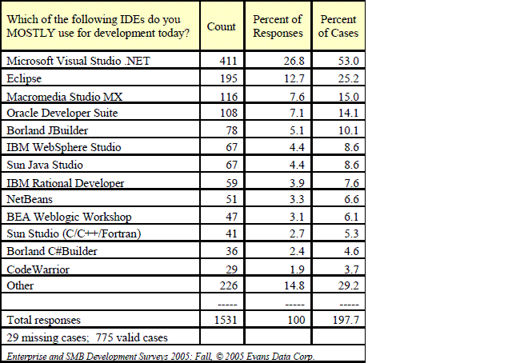
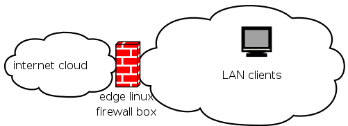

> from the Control Center select Appearance & Themes. Choose
> Background from the sub-menu. Yeah, Background. Who knew?
It's even easier than that. Just right-click the desktop
background and click "Configure Desktop...." It takes you
directly to the Background configuration screen without having
to navigate the K menu and the Control Center interface. From
there, just follow the same procedure outlined in your tip.
Linux VMware and Novell
Edgar Howell (Edgar_Howell at web.de)
Sun Jul 2 06:30:45 PDT 2006
Answered by: Rick
Just found the time (unusual mid-week) to glance at Novell's latest
newslatter, Novell Linux News, of 28 June and there is a potentially
interesting article on use of VMware. It involves compilation and
references OES Linux, which I am not familiar with. Nonetheless it
might be worth pointing out to readers as an alternate approach or at
least another source of information for SuSE users.
Running a VMware Virtual Machine as a Service in OES Linux
Hmmm, having just read the reader comments at the end, dunno. But
nothing wrong with letting other people make up their own minds.
[Rick] - The intended reference is obviously to Novell OpenEnterprise
Server. A minority of us old-timers have some lingering fondness for
Novell NetWare, and might have lost at least a little sleep wondering what
happened to it: Well, OES is where it went.
NetWare historically started from DOS on a tiny FAT partition, with the
booting NetWare core then seizing control from DOS and then mounting the
NetWare-native filesystems, and starting various network services. As
reimplemented in OES, the base OS is a full-blown SUSE Linux Enterprise
Server (SLES) installation instead of DOS -- and the NetWare core,
ZenWorks, and other stuff are implemented as (I gather) regular SysVInit
services.
The referenced
Novell application note explains how to launch VMware within the Novell
environment that's in turn running on SLES. That's not actually useful
for SUSE users as such, though it is indeed a "cool solution" (in the
wording of that app note) for NetWare / OES admins.
Passwords
Benjamin A. Okopnik (ben at linuxgazette.net)
Tue Jul 18 06:55:20 PDT 2006
vsesto (vsesto at adelphia.net)
Sat May 20 16:37:43 PDT 2006
Answered by: Thomas
Hello Thomas
I have an interesting issue that I wanted to ask you about regarding
FvwmCommand.
I have some apps that I "exec" in the InitFunction in the .fvwm2rc
file.
One of these apps issues a FvwmCommand. Does it take time for the
FvwmCommandS FIFO server to start up before being reasonably able to
begin issuing commands?
I ask this because I noticed that the FvwmCommand fails ... but then
if the app issues it some time later it succeeds. Kinda strange ...
should my app actually wait some time to give Fvwm time to finish it's
initialization?
[Thomas] - As an aside to your question, the use of InitFunction (if you're not
using FVWM 2.4.X) isn't something you should use. Thanks to the Test
command, you can now conditionally check to see at which state FVWM is
in when it is either restarting, loading, etc. FVWM will always read
the ''StartFunction'' across inits and reboots, hence:
DestroyFunc StartFunction
AddToFunc StartFunction
+ I Test (Init) Exec exec my_application
If you just had:
+ I Exec exec my_application
in your StartFunction, that would get run regardless of whether FVWM was
restarting or initialising.
> One of these apps issues a FvwmCommand. Does it take time for the
> FvwmCommandS FIFO server to start up before being reasonably able to
> begin issuing commands?
That depends (note that the use of "server" is slightly erroneous, given
that it does nothing more than create the FIFO). It isn't so much the
fact that it takes time, as it is a matter of when it gets ran.
Consider for a moment the following derived function:
DestroyFunc StartFunction
AddToFunc StartFunction
+ I Module FvwmEvent some_alias
+ I Test (Init) Exec exec feh --scale-bg some_image.jpg
+ I Test (Init) Exec exec xteddy -wm
+ I Module FvwmCommandS
+ I FvwmCommand 'Function myfunction'
One might expect those commands to run synchronously (one after the
other in the order that they're specified). By and large that's often
the case, however there are times when that isn't always true. If you
consider that some commands might have a certain latency about them,
then it may well be that some of the commands are started out of sync to
the order listed in the function. FVWM makes no attempt at
synchronisation within commands started in the 'I'mmediate context.
So what are your options? In FVWM 2.5.X you can use the ''Schedule''
command which waits a certain number of milliseconds before starting a
command. This is non-blocking to anything else, hence:
DestroyFunc StartFunction
AddToFunc StartFunction
+ I Module FvwmEvent some_alias
+ I Test (Init) Exec exec feh --scale-bg some_image.jpg
+ I Test (Init) Exec exec xteddy -wm
+ I Module FvwmCommandS
+ I Schedule 900 FvwmCommand 'Function myfunction'
Here, the schedule command will wait 900 milliseconds (almost a second)
before running the specified command.
In FVWM 2.4.X however, you can't use the Schedule command as it wasn't
introduced then. What you would need to do is use PipeRead if it was
something you needed to send FVWM:
+ I PipeRead 'sleep 5 && echo "Function myfunction"'
Or if you wanted to just spawn a separate process:
+ I Exec sh -c 'sleep 3 && exec my_application'
> I ask this because I noticed that the FvwmCommand fails ... but then
> if the app issues it some time later it succeeds. Kinda strange ...
> should my app actually wait some time to give Fvwm time to finish it's
> initialization?
See above. Note that your use of FvwmCommand within a function which
FVWM is already evaluating seems very superfluous. Consider what
FvwmCommand does -- its job is to send commands from an external source
(such as a shell script, or terminal). It works fine in those
situations, but do you need it from within a function? No, of course
not -- FVWM is already interpreting those commands for itself. Why go
the long-way around in spawning a command externally, and then sending
it back to FVWM?
What you probably are angling for (I'm guessing here since you haven't
said what it is you're trying to do) is interpolating various conditions
and then getting FVWM to react to certain things based on the outcome.
Since such "processing" is typically done at the shell-level, this is
where the ''PipeRead'' command comes in useful. Note only that but it's
operation is synchronous. :)
Where PipeRead shines is being able to script various things at the
shell, and then send back commands to FVWM to act upon. Take a derived
example. Suppose you wanted to evaluate an environment variable -- or
perhaps more importantly set its value. FVWM has the ability to export
environment variables into its own environment space by way of the
''SetEnv'' command. Hence:
SetEnv myvariable 200
... will export and declare a variable called 'myvariable' with a value
of 200. In doing so, other FVWM modules when they are spawned will
inherit those variables (because of the fact that all process created
from FVWM inherit information from its process space -- just like the
paent/child relationship to shells). This is really their main use --
despite the fact that some people think it a good idea to overuse them.
(1)
Now let's assume that we wanted to create a new variable which holds the
result of performing some mathematical function on our ''myvariable''
variable. FVWM has no builtin capabilities to operate numeric
operations (yet). The only way you're going to be able to do that is at
the shell level. PipeRead will help us achieve that, as in:
It's important to realise what this line is doing (and how FVWM operates
in this context). As soon as you open up a PipeRead command, you're at
the shell level. That means shell-quoting techniques apply. The next
thing to realise is that it's an evaluative mechanism. Typically the
whole point of using PipeRead is to evaluate a condition and react to
it. So FVWM typically expects a reply in return. FVWM will know you're
asking it to do something by you echo'ing back your responses. These
reponses are then read by FVWM, as though they were typed in an FVWM
configuration file, or in FvwmConsole.
Variable interpolation happens first of all. $[myvariable] (which is
FVWM's way of interpolating a variable) is expanded. The shell then
performs an increment on the variable. When that's done the value is
echo'ed back to FVWM along with the "SetEnv mynewvar" part, hence FVWM
sees and executes:
SetEnv mynewvar 201
...cool huh? Note that I have seen some people try to achieve the same
thing by doing this:
SetEnv y PipeRead "echo $[2*$[x]]"
I can see the logic behind this, but consider why this doesn't work
(based on what you now know). FVWM will run the PipeRead command and
have back some number (whatever the result of 2*$x interpolates to) --
of course, FVWM has no knowledge of what the number might do. It also
(because of where the expansion occurs) has no idea to connect it to the
SetEnv part before it. Hence in order to resolve that issue, it's
important to remember that everything has to be in the PipeRead
command. I've explored this issue in the following
(2)
The other great thing about PipeRead (as I have said) is
that it's synchronous. FVWM will wait for a PipeRead command to finish.
So this is probably what you really want to use. This greatly ensures
that commands are ran one after the other.
I hope that helps, and I apologise for the somewhat rambling nature of
my replies -- I have no idea how many other people on this list care for
the information (or the readership this will reach), but it can't hurt.
:)
Need help on ...errr.... developing?
MNZ (mnzaki at gmail.com)
Fri Jun 9 05:57:04 PDT 2006
Hi, I'm a Linux enthusiast who would like to "get better". I just dunno
what to do next (don't laugh!). I have a Debian, working quite well (after
a long struggle) , and everything's alright. I just want to know what to
do/learn/try next?
This is not a linux-unrelated question. In fact it's very Linux related!
[prays not to get flamed]
--
//MNZ
[Kapil] - Ah. "I enter the shop of the-101-flavours-try-any-number-for-free
and I don't know what to do next!"
[MNZ] - That's exactly my situation....... : - /
[Kapil] - Take a step back and think about why you wanted to use the computer
in the first place:
1. Write nice documents.
2. Calculate some things.
3. Play games.
4. Write/design games.
5. Create graphics.
6. Play audio/video.
7. Compose audio/video.
8. Impress your friends.
....
[MNZ] - Interesting question....... What do I use a computer for? [At this
point, I got very conffuzled @_@]
[Kapil] - This is the garden of infinitely forking paths and each one leads
somewhere. Pick one. After that you can pick applications specific to
that activity---look at "tags" under Debian as a way of looking at the
choices for applications or ask at TAG for more info.
[MNZ] - Thanks, I'll look at the tags
[Neil] - How about picking some of the items you struggled with and
volunteering to improve the documentation.
[Kat] - Your question's sort of vague, and thus hard to answer, but I
suspect someone will be along shortly with some responses that might shake
out some clarity all around in that regard.
Your question is Linux related, and I think it'd be the start of an
excellent article!
[MNZ] - My Stupid question can start an article? I amaze myself
sometimes......
[Kat] - * grin * OH, all sorts of things can spark articles.
[Kat] - I'm meddling here, but it strikes me that your Debian-configuration
struggle sounds like it was recent, and that your recollection of it
might be fresh. There are lots of people for whom that would be old hat,
but I know that I am interested in hearing that sort of story.
[MNZ] - Actually my "struggle" is just 5 months old, normal stuff for a
biggner. Mainly opengl and ALSA. But don't take me lightly! I might be a
biggner but I have learnt a lot in this time. I used wind0ze for a loooong
time (7 years) but it was my only choice, and I never actually knew that
there was another OS (just to avoid bedazzlement, I'm 14. I guess that
explains a lot)
[Kat] - You're 14? I think I'm more prepared to believe that you're a typing &
talking dog. You could have told me you were 44 and I'd have believed
that.
[MNZ] - I do know a lot now, good C++ and good PHP , linux in general.
From here I just dunno where to go next.
[Kat] - Write up what you remember about how you got to where you are now.
This phase usually doesn't get captured, and I think it's the sort of thing
that can really inspire other people.
[Kat] - Oh, and...there's not really a standard curriculum for what comes
next. It seems to me that the real question is, what do you want to do
next? Is it a matter of being utterly at a loss to know what the next
options are, nevermind choosing one? (I've been there in various forms,
knowing that I was ignorant and not knowing how to start fixing it.)
[MNZ] - I have read that before, and also parts of the jargon
[Jason] - One of ESR's suggestions is to learn different many different
languages. This is a great idea because of the different programming
approaches this exposes you to. Every programming language is biased
towards some way of solving problems. But you won't be able to appreciate
this fact unless you are familar with how another language does things.
For instance, recursion is a powerful concept. It's also somewhat of a
second class citizen in languages like C++ and PHP. So if you're coding
along in a language like that, and you run into a problem that's a
natural fit for recursion, you might not realize it unless you know a
language where recursion is used extensively, like Lisp or a functional
programming language, such as Haskell or Ocaml.
By the way, for learning Lisp, "The Little Schemer" is a great
introduction to Scheme[1]. It's actually less of an introduction to
Scheme as it is a guide on how to think recursively. It uses an unusual
teaching style (the Socratic method, actually) which I find to be
effective because it forces you to think about hard concepts.
[1] "Lisp" is not actually not particular language, but rather a family
of languages, to which Scheme (and many other languages, of course)
belongs.
[MNZ] - Thanks for the suggestion! That's what I'll do now, Try to learn
Scheme from that book. In fact I'll start right away.
[Lew] - Funny, but I was going to reply (and still am, :-) ) similarly, but
with a difference. I'm a programmer by trade (an "IT Specialist", if you
believe my job description), and I spend a lot of time at my computer.
However, I don't spend a lot of time developing on my systems at home;
that would be too much like work, I guess.
I find myself "learning many different applications", rather than many
different languages. I concur with ESR's opinion on the benefits of
learning many different languages (I know at least 8 or 9 programming
languages, p'haps more, if I dig a bit), and I have found that such
knowledge helps me do my job. Extending ESR's opinion a bit, I find that
the more I know about the tools and applications that I use, the more
alternatives I can find for methods and practices (the how and why) of
building applications.
So, my suggestion would be to do something like
- install and configure a caching name server, and learn how DNS works
- install and configure a Wiki on your system and learn how web
services work,
- install QEMU and MSWindows and learn how virtualization technology
works
- put together a VPN using StrongSwan and learn how VPNs work
- build a tough firewall from scratch, and learn how firewalls work
These will give you the breadth of experience in order to pick and choose
techniques and solutions when you do write your next programming project.
[Thomas] - I can't thank you enough for asking this question. Ok, so you
have Debian installed (which flavour was it, by the way?). Stable's
probably good to start off with -- that is guaranteed more or less not to
go wrong (from a package management point of view). You haven't said how
far along with things you are, so here's some ideas/experiences for you.
Get to know the command-line. I cannot stress that enough. I realise in
the sugar-coated world of KDE and GNOME, there's now a GUI that can wipe
your arse, but in the $REAL_WORLD, using KDE and GNOME for the rest of
your linuxy life is just not going to be a likelihood you can rely on. If
X11 breaks (it can do) then you'll be left at the command-line.
[MNZ] - I Forgot to say How Far I got, quite sorry, It could have saved you
alot, but I did say that on another reply. Actually I've been more than 5
months with Debian (testing) now. I Already got used to the command-line,
because X11 did break! It was a really pain getting Opengl up properly and
ALSA too.
[Thomas] - No -- I wasn't really replying with your own skills in mind.
[Thomas] - What do I mean when I say "command-line"? I don't mean
learn shell programming (which in your case, like most linux distros, will
be bash). That can come in time. I mean learn some of the basics about
the commands that affect your system, such as package management. So,
here's a little overview of how to do that, along with some history and
examples, just to bore you.
Back in the Debian 2.0 days (Slink and the like), there existed apt-get.
It had always been there from Debian's inception, and it's one of the
best package management resolution tools there is. Debian pretty much
uses the "one tool only, and that tool will do its job well" philosophy so
evident throughout UNIX history (read Eric Raymond's "The Art of Computer
Programming" if you're interested). Example: you wan't to search for
packages that relate to circuits:
$ apt-cache search circuits
... would search the descriptions and names to match the word 'circuits'.
If you just wanted to search the package names for that word, you can use:
$ apt-cache --names-only search circuits
If you like the look of a package, you can install it, simply by issuing
the command:
$ apt-cache install <name>
... where "<name>" expands to some package name. Now, there's one
thing
you should always do before installing new packages, and that's:
$ sudo apt-get update
(If you don't know what sudo is, it runs programs as the root user --
hence where I use sudo in my examples, you will have to ensure you're the
root user.)
What that command does is pull down all the new packages and dependencies
information from the branch of Debian you're using. How does it know
that? Simple. It uses the URLs listed in /etc/apt/sources.list.
It's this information that apt-get then uses in determining not only which
packages are available to you, but also their dependencies, etc. Apt-get
does it all for you, and it's not something you need to worry about. So
apt-get is reponsible for dependency resolution in the grand scheme of
things. Once it has worked out all of that and downloaded the packages,
the next tool in the chain is "dpkg". This tool's job is simply to
install the packages, and manage them at the lower level. It doesn't
understand or care about dependencies.
Removing packages is much the same, although the term "removing" comes in
two flavours. The term "remove" removes all files of that packages
except its configuration files, whereas the term "purge" removes all
files including those configuration files, hence:
$ sudo apt-get remove <name>
... removes all but the configuration files, whereas:
$ sudo apt-get --purge remove <name>
... removes all files, plus the configuration files. It's an important
distinction, and it's done that way so that a package can be removed
during the upgrade of a package (say) without there being any loss to the
custom configuration of those files.
As to which one you as the user wants to use -- if you know it's a
non-critical package (and that you have some form of configuration files
stored in your $HOME directory). using --purge won't hurt you, since dpkg
can only remove those files that belonged to the package initially, and
not ones created by the user which still -relate- to it (this is the one
thing the RPM package manager does though, and that I agree with to an
extent).
Following so far? Good. Because that's the very, very, basics of it.
That will get you installing and removing packages that you perhaps don't
want.
What's next? Hmm. Mess about in some of the GUIs. That's very
important since you need to find one that you're going to be best
productive in, I suppose. Install KDE. Install GNOME. Do whatever with
them -- both have their advantages and disadvantages. If you want to know
what others there are, then see:
[MNZ] - I have checked out the page. There's lots of stuff I didn't know
that's because I usually use aptitude. But I'm trying to learn using
apt-get now, It somehow seems...... stronger.
[Thomas] - Debian is pushing aptitiude. I resist it because it's broken.
Especially in that it does things differently depending on whether you're
in its interactive mode (ncurses) or command-line.
[MNZ] - Thanks for your help. By the way
the page you sent me is VERY useful! great site!
[Thomas] - After that -- I am not sure. What interests do you have
that you could apply to your learning?
[MNZ] - It's the "after that" part that I don't know. But Anyway, the url
and the part that I snipped here were very helpful Thanks alot Thomas.
[MNZ] - Thanks! Now I Have a lot to do. I'm going to try to do everything
listed on that page. I already know/did some of those, but there's a lot I
never tried. Anyway I'm trying to learn Scheme now, completing these will
be my next goal.
[Rick] - To be a sysadmin, it also helps to have a bad attitude -- though
it's not absolutely essential to arrive with one. (It'll be issued to
you.)
[Kat] - 1/2;) - why does it help to have a bad attitude? A bit of
cynicism, that I can see being helpful. Outright bad attitudes toward
lUsers, I've never understood that.
[Rick] - Because the BOfH's four main weapons are a bulk eraser, an
etherkiller, an electrified doorknob..., and a fanatical devotion to Simon
Travaglia. And surprise. Surprise and fear.... nice black uniforms. No,
no, our five main weapons are...
[Rick] - I did, indeed. (The early ones are still the best.)
[Jimmy] - The guy who introduced me to Linux said this of users: "Always
assume stupidity. You'll rarely be wrong." :)
[Rick] - Alternative, equally unkind formulation is in .signature block.
--
Cheers, The Technical Support Credo:
Rick Moen Remember, there are no stupid questions,
rick at linuxmafia.com only stupid people asking questions.
[MNZ] - One more thing, I like that part that says " in infinite wisdom MNZ spoke
thus On 06/09/2006 06:27 PM:" XD
[Rick] - MNZ, you might actually want to work on your own attribution
string, which I'm guessing must be the default of
> User-Agent: KMail/1.7.2
Meaning no personal criticism, the attribution phrase "you wrote" is a bit
less than informative when used on mailing lists. You also may or may not
want to change your GECOS field to something approximating your name. If
nothing else, "MNZ" is a bit challenging to pronounce. ;->
[Kat] - Oh, "emenzee" and "menzee" seem like possibilities...
[Jimmy] - I'd have gone with 'minz', but that's probably because I've
recently been introduced to a popular Polish activity: making fun of the
Czech language. :)
[Ben] - Articulate, polite, computer-savvy, and ambitious - all at 14 years
old. MNZ, I'm impressed. :)
[MNZ] - Thanks!
[Ben] - As has already been suggested here, you should indeed write an article
about your experiences with Linux; I suspect that it would make a very
interesting exposition for many people who are, perhaps, too timid to
dive into this big ocean. If you're interested in doing so, take a look
at our New Author Guide (appended), and email me if you have any
further questions. It would be a pleasure to see one from you.
[MNZ] - Mr. Neil Youngman has suggested documentation, I know. But I don't
fell very comfortable writing something (Although I'm considering giving it
a shot, I already have a little website on my localhost that I might try to
enlarge later), I think I 'll just go with learning something new now.
[Ben] - Cool beans. :) If you change your mind, you know where we live
(articles go to articles@linuxgazette.net, BTW.)
[MNZ] - I have read the whole article (New authors guide), very nice.
One last thing, it's a little off topic but I just had to share it :) I
found this on my google personal homepage under jokes:
"There was once a young man who, in his youth, professed his desire to
become a great writer.
When asked to define "great" he said, "I want to write stuff that the whole
world will read, stuff that people will react to on a truly emotional
level, stuff that will make them scream, cry, howl in pain and anger!"
He now works for Micr0s0ft, writing error messages."
[Ben] - [laugh] I hadn't heard that one before; it's cute. Thanks, MNZ!
An article series I wonder what happened to...
clarjon1 (clarjon1 at gmail.com)
Mon Jun 12 09:01:26 PDT 2006
Answered by: Ben, Rick, Thomas
Hey, Ben
Do you remember those Frink and Woomert stories you had? I enjoyed
them: Humour, and education! Wish my school did that sorta thing...
Anyways, think you could write one once in a while? Thanks!
[Ben] - Well, thanks for the encouragement. Life's been pretty full lately,
but I've actually managed to toss a few ideas into a file destined to
eventually become a Perl One-Liner of the Month. I'm not sure of when I'll
have a chance to write it (might even be this month, since the article
stream has been pretty thin), but it's definitely on the boards.
[Clarjon1] - Hey, ben, as to that one idea, with the spaceship and all?
what if their language could be translated by decoding it with some perl
modules? u know, like with morse and i dunno, mebbe uuencode or something?
a few different formats maybe? just an idea to throw past you...
[Ben] - It's a cute idea - thanks! - but then I'd have to define their
language. Hmmm... maybe it's similar to Klingon, or Igpay-Atinlay... :)
[Clarjon1] - PS: I wrote my first perl program! it's very simple, based
mostly on one of the things in the perl tutorial, and it searches through
lines in a file for the criteria...
[Ben] - Ah, good old "perl -wne'print if /criterion/' file.txt". :)
[Clarjon1] - I use it to keep track of appointments and important stuff.
Right now i have to use a text editor to add stuff, but I'm sure I can get
an input worked in eventually... I used that example of how to call up a
filename, and then search for keywords. Works for me thus far!
[Ben] - Which Perl tutorial is this? There are a lot of them out there.
[Clarjon1] - Umm, one of the man pages...
[Ben] -
ben at Fenrir:~$ cat /usr/share/perl/5.8.8/pod/*|grep -c $
156874
Somewhere in the over 150k lines of'em. Oh well... :)
(BTW, do me a favor - insert a blank line between the text you're
responding to and your response. This makes it much easier to read.)
[Ben] - As to a reading and writing the sort of scheduler you're talking
about, there's a little complexity involved; if you want to write to a
file, you need to learn about the 'open' call and filehandles. Be careful
swimming in those waters; if you're not careful, you'll get hooked and end
up as a Perl programmer. Sure, people will throw lots of money at you,
you'll be able to do what you want in a tenth of the time that you used to
spend, and you'll have lots of fun, but who wants to be bothered with all
that stuff? :)
[Clarjon1] - You're right. Enjoying oneself does NOT have a place, or
time, in this society. What was i thinking??
Anyways, I've attatched the script as it is right now...
[Ben] - Except that, of course, Mailman scrubs out attachments.
[Rick] - It actually doesn't. I'm guessing Jonathan accidentally omitted
the attachment.
[Clarjon1] - Eep! Oh, shoot, i did, didn't I? And i brought my PC into
the school to hog -- err, i mean make use of the high speed internet....
Might have been a good thing... Actually, the whole thing is a total of 34
lines long, and only about 8 lines are the actual program <blush>.
I've heard so many complaints about people not documenting, I guess I went
a little overboard... Ah, well.
Ok, i've pasted the actual bits of code, with a very minimalistic
version of comments below.
calprog.pl:
#!/usr/bin/perl
open(INFILE, "calendar") or die "Can't open input.txt: $!";#outta curiosity, can INFILE be changed to another name, like CALFILE or something?
$searchme = shift;
#This just grabbed the search term from the command line. How do you get more than one term? must find out...
while (<INFILE>) {
print if /$searchme/; #searches thru the file for the searchterm
}
print "\n";#this just spits out a newline when all is done, so that the last result doesn't immediately precede the commandline.
[Ben] - [quoting Clarjon1] -
> #outta
> curiosity, can INFILE be changed to another name, like CALFILE or
> something?
Certainly. You should
1) Construct the name using [A-Za-z_] characters, preferably not
beginning with an underscore,
2) Make the filehandle name either Sentence-capped or ALL-capped,
3) preferably make it indicative of what you're opening (e.g., 'In' for
an input file, 'Out' for output, 'Data' for reading a data file, etc.), and
4) Make it short so you don't wear your fingers out typing. :)
Most people just tend to use 'F' or 'Fh' in most cases.
> $searchme = shift;
> #This just grabbed the search term from the command line. How do you
> get more than one term? must find out...
# Actually removes the elements from @ARGV
$a = shift;
$b = shift;
$c = shift;
or
# Does not remove, just copies them
( $a, $b, $c ) = @ARGV[0, 1, 2]
[Rick] - The main Mailman queue process actually doesn't even know what an
attachment is, let alone strip them out. The semi-separate Pipermail
Web archiver module does present them, if present, on the archive Web
pages as separate selectable links, rather than as an inline mess, as
was formerly the case.
Pipermail used to be one of the part of Mailman that notoriously sucked,
and was included over superior competition such as MHonArc solely
because somehow had (half-assedly) coded it in Python (before orphaning
it). Fortunately, the Mailman guys eventually got around to making it
Suck Less <tm>, bringing Mailman as a whole up to a wholesome
mediocrity.
(There: I just eliminated myself from their Christmas card list, I
think.)
[Ben] - Feel free to paste code bits into the body of your post - unless,
of course, it's huge (at which point, it's best to toss it some place where
it's downloadable and provide a link.)
[Rick] - What he said. FYI, this mailing list is configured to reject any
message over 40 kB -- solely because that's the Mailman default. It can be
adjusted as TAGgers wish, but of course any setting will displease
somebody. ;->
[Clarjon1] - /me gets a bit back on topic...
As for the language of the aliens, how about a mixture of:
1) igpay atinlay
2) morse
3) that code one of the previous adventures came up with for the
spam-proof emails? (I think it was the one with the government
officials who extracted sysadmin or someone like that...)
Need some help to check a script for unexpected security issues
Suramya Tomar (security at suramya.com)
Thu Jun 15 15:35:10 PDT 2006
Answered by: Ben, Thomas
Hi Everyone,
Couldn't think of a better title than that, so if it didn't make sense
I blame the lack of caffeine.
This is a script that I wrote so I can give ssh access to my server to a
friends computer whose IP address keeps changing everyday without any
manual intervention on my side. I have been thinking about this for a
while and this seemed like the easiest solution with the least work on
my side. Plus it was an interesting challenge for me to get this to work :)
[Some of you might remember that I had asked a question about this topic
a while back. I switched ISP's so my IP address doesn't change that
often anymore but my friend is stuck with my old ISP and wanted to get
access to my system. The result is this script.]
Now its working but since I would have to run this as root for it to
work I wanted to share it with you so that if it has some security
implications I haven't thought of then I can fix it before I start using
it...
I had my friend create a DynDns account and had him configure his system
to keep the IP address updated using one of their update clients.
On the server side I use the host command to get the latest IP address
for his hostname and then give that IP address access to my system.
Below is the script I made, if you see something wrong/unsafe let me
know and I will try to fix it:
------------- Start get_ip.sh ---------------
#!/bin/bash
IP=`host blah.dyndns.com`
# This reads in the OLD IP address he had
read OLD < OLD_IP.dat
# Get the current IP address
if [[ $IP =~ '(.*)has address (.*)' ]]
then
if [ "$OLD" != "${BASH_REMATCH[2]}" ]# Didn't match so the IP changed
then
# So We log the current date/time and the new IP to a file
echo `date` ": Removing access for" $OLD "and giving access to"
${BASH_REMATCH[2]} >> access_log.log
# Set the Static firewall rules
Result=`/home/suramya/bin/S41firewall`
# Create a new rule to allow the current IP address access
Result1=`iptables -A INPUT -s ${BASH_REMATCH[2]} -p tcp -m tcp
--dport 22 -j ACCEPT`
# Drop all other connections to port 22
`iptables -A INPUT -p tcp --dport 22 -j DROP`
# Replace the old IP address with the new one
echo ${BASH_REMATCH[2]} > OLD_IP.dat
fi
fi
---------------- End get_ip.sh --------------
Any comments/feedback on this would be appreciated.
Thanks,
Suramya
PS: If this looks ok and doesn't cause a major security hole I will
release this under the GPL, and if you feel its worth it/fits then you
can include it in LG.
[Thomas] - Bash3 specific, eh? Nasty. That's going to be portable to
about 0.1% of computers. Fine if you're running it on your own machine,
but you sent it in here, to users whom might not be so fortunate. Better
to use egrep:
egrep '(.*)has address (.*)' <<< "$IP"
> if [ "$OLD" != "${BASH_REMATCH[2]}" ]
> # Didn't match so the IP changed
> then
>
> # So We log the current date/time and the new IP to a file
>
> echo `date` ": Removing access for" $OLD "and giving access to"
> ${BASH_REMATCH[2]} >> access_log.log
Again with the above you'd have to ensure you separated out the matched
clauses. You could use an array for this, or use awk.
> # Set the Static firewall rules
>
> Result=`/home/suramya/bin/S41firewall`
You should use $HOME here.
[Ben] - [Quoting Suramya]:
> Hi Everyone,
> Couldn't think of a better title than that, so if it didn't make sense
> I blame the lack of caffeine.
Many evils have been perpetrated due to that factor, yes...
> ------------- Start get_ip.sh ---------------
> #!/bin/bash
>
> IP=`host blah.dyndns.com`
>
> # This reads in the OLD IP address he had
> read OLD < OLD_IP.dat
>
> # Get the current IP address
> if [[ $IP =~ '(.*)has address (.*)' ]]
This would always fail on my system since my 'host' output does not
contain anything like that.
ben@Fenrir:~$ host www.dyndns.com
www.dyndns.com A 63.208.196.66
Perhaps something like "host blah.dyndns.com|awk '{print $3}'" would
work better.
> then
> if [ "$OLD" != "${BASH_REMATCH[2]}" ]# Didn't match so the IP changed
> then
>
> # So We log the current date/time and the new IP to a file
>
> echo `date` ": Removing access for" $OLD "and giving access to"
> ${BASH_REMATCH[2]} >> access_log.log
>
> # Set the Static firewall rules
>
> Result=`/home/suramya/bin/S41firewall`
I notice that you didn't use $Result anywhere after this, so there's no
reason for creating it - right? Also, since no one except you knows what
is in that 'S41firewall' script, this script isn't going to be very
useful - unless running 'S41firewall' is not a requirement.
> # Create a new rule to allow the current IP address access
>
> Result1=`iptables -A INPUT -s ${BASH_REMATCH[2]} -p tcp -m tcp
> --dport 22 -j ACCEPT`
Ditto for 'Result1' - although, presumably, you need to inform
'iptables' of your new IP, so it needs to be run.
> # Drop all other connections to port 22
>
> `iptables -A INPUT -p tcp --dport 22 -j DROP`
Why are you using command substition (i.e., those backticks) anyway? Is
this a cargo-cult programming dagger I see before me?
> # Replace the old IP address with the new one
>
> echo ${BASH_REMATCH[2]} > OLD_IP.dat
> fi
> fi
>
> ---------------- End get_ip.sh --------------
Here's my version:
#!/bin/bash
# Created by Ben Okopnik on Fri Jun 23 11:14:59 EDT 2006
old=
new=`host www.dyndns.com|awk '{print $3}'`
[ "$old" != "$new" ] && {
$HOME/bin/S41firewall
/sbin/iptables -A INPUT -s "$new" -p tcp -m tcp --dport 22 -j ACCEPT
/sbin/iptables -A INPUT -p tcp --dport 22 -j DROP
/bin/sed -i "s/^old=/&$new/" $0
}
This one has the advantage of not requiring an external file for the
current IP; that gets saved within the script file itself. I'm assuming
that you're clever enough to do 'chown root:root foo; chmod 0700 foo',
which would set the right ownership and permissions, and you should be
all happy and like that. :)
Set it up as a cronjob, and you'll never have to think about it again.
Need help with grep
David Martin (davidmartin1 at gmail.com)
Sun Jun 18 00:15:09 PDT 2006
Answered by: Barry, Ben, Jason, Rick, Thomas
Hi Gurus,
I need urgent help with grep/awk ok please, I've spent over 17hrs
pulling my hair out over this question. I hope you can help a Linux
newbie please.
My lecturer has asked me to do the following with this file, But I
cannot get this on one line:
Here is the question:
Q5
Using an httpd log (which will be provided on the subject forum)
write a single command line using a pipeline of commands mentioned in
The complete guide to Linux system administration: Chapter 5 to
determine the top ten busiest dates (most objects accessed).
I've reformatted this thread, but I've left in Rick's
suggestion/request for the general enlightenment of future querents. - Kat
[Rick] - Hi, David! I'm the listadmin, and notice in the logs that you
seem to have withdrawn your posting, which was held for listadmin approval
because its 1 MB attachment greatly exceeded the 40 kB ceiling on message
size.
However, I'm sure the TAG gang would indeed like to help you. Is there
a way you could cut the attachment size to just the log portion relevant
to your problem -- or to put the logfile on a Web or ftp site and send
us the URL rather than a big honkin' file? ;->
If 40kB seems tiny to you, please be aware that many TAG members are on
slow dial-up lines. A sudden unplanned 1 MB download is, alas, not OK.
I'm going to forward your post, without the attachment, to TAG, by the
way.
[Thomas] - This is NOT a "we do your homework club". However, you're
lucky. This question is of suifficient interest that it's one that
sometimes crops up from time to time. So I am going to answer it. Do you
have you lecturer's email address? I'd like to know how many marks I'd
get. :P
Did your lecturer give you that command, or is that your attempt to match
an IP address? If your lecturer gave you that command he's an idiot.
Because you're using "*" that could potentially match anything -- the only
requirement that has is that the periods (.) match, with something vague
in between.
Of course, it does work, only because you've told grep to match the
explicit form (via it's -o switch). We can improve upon this a bit
though. I'm going to use egrep(1) here -- since you seem to be using
grep(1), you're going to have to escape the character classes in the
following:
This is much better. This is now matching numbers, since the "+" operator
ensures that each number within the tuple delimited by a period (.) must
have at least one number. This is true of an IP address. Note though
that you can write that a different way:
This is a little more explicit in that it matches anything between one or
three numbers, followed by a period (.) -- in the example before it, we
were reliant entirely on the fact there might be a number (occuring at
least once) upto some length that then had a period (.) -- with the above
example, that's contained to anything between 1 -- 3 digits inclusive.
Note that there many more complex regexps one can use to match IP
addresses (which essentially look for validity in terms of IP class
structures, etc.) although I shall leave those for you to persue at your
own leisure.
[Jason] - Does the "IP class" structure really exist anymore? I had thought
that when the number of hosts on the internet exploded, the solution was
basically "Okay, we need all the address space we can get. Let's throw out
IP classes and require explicit netmasks." How far off am I?
[Thomas] - You're not too far out. That is indeed the theory behind it,
but for many organisations, their internal networks still use a class-based
approach -- they more or less have to, otherwise how else is organised
chaos supposed to work when you're a BOFH? :P
[Barry] - You're right on the nail actually. "Classful Notation" has not
existed since 1993. It used three classes:
C - (now /24) 256 addresses (the first three octets fixed - 111.111.111.xxx)
B - (now /16) ~65k addresses (the first two octets fixed - 111.111.xxx.xxx)
A - (now /8) ~16.5m addresses (the first octet fixed - 111.xxx.xxx.xxx)
Using classful addressing only fixed sized ranges could be assigned thus
wasting address space.
This problem was solved with "Classless Interdomain Routing" (CIDR)
(pronounced Cider for the drinkers!). With CIDR, the network is determined
with the "slash notation" where the slash indicates the number of
significant bits if the IP address was written in binary. e.g.
192.168.1.0/24 - 256 addresses - 24 significant bits with eight bits per
octave resulting in the first three octets fixed as with a class C subnet.
192.168.1.0/25 - 128 possible addresses
192.168.1.128/25 - 128 possible addresses
So we can assign two subnets of 128 instead of two class C's of 256 each.
/24's are still commonly used and (incorrectly) referred to as class C's
for many internal LANs. This is not really an issue as these use private
IP space from one of the three ranges:
10.0.0.0/8
172.16.0.0/12
192.168.0.0/16
The most common of course being 192.168.1.0/24.
[Thomas] -
> One thing I did not do was to remove duplicate entries from the
> output. I should have run this from the shell instead.
>
> grep -o "[[:digit:]]*[.][[:digit:]]*[.][[:digit:]]*[.][[:digit:]]*"
> httpdaccess.log | sort -u > ipaddresses.log | rzip ipaddresses.log
I'd have used "uniq" here, but it's up to you. Note that the command
above as you have it doesn't work -- at least not as far as rzip is
concerned. What you probably wanted was something like:
Assuming of course that rzip is capable of reading and writing to the same
file. I don't know -- never used it, so it's something you'd have to
check. Note of course what was wrong with your command initially. You
were redirecting the output from sort(1) to a file and then somehow
expecting that output to be available at the pipeline for rzip to
interpret. That's not true -- the contents of the pipeline from sort had
been dumped to a file, hence the need to get rzip to use the
ipaddresses.log file. Again, because I don't know what rzip is like, you
might be able to use:
> Here is the question: Q5 Using an httpd log (which will be provided
> on the subject forum) write a single command line using a pipeline
> of commands mentioned in The complete guide to Linux system
> administration: Chapter 5 to determine the top ten busiest dates (most
> objects accessed).
What a crap question. I have no idea why your lecturer thinks there needs
to be a pipeline of commands --- one can implement this easily enough in
awk or ruby without using anything else. Here's a start to what you want:
I've used tail so I only see the last five hunderd or so lines (my
access.log file is huge). I've used uniq to count and display the number
of unique entries of IP address matched. The sort command (overly
superfluous with its options here. but you ge the idea, I'm sure) sorts
the first column for frequency and reverses it.
You then want to match the date. Hmm. That depends on the format of the
log file your lecturer has given you. Of course, what has been matched
above is an accummulation of IP address frequencies across all dates, and
not anything specific. For the access.log file I am looking at, the date
entry looks like this:
[15/Nov/2005:00:18:46 +0000]
You can then extract the date and construct an array based on IP addresses
that date entry matched in your file. Example:
That matches all the dates between the 500 lines returned from tail. I
suppose crudely you could come up with something like this:
tail -n 500 ./access.log | \
awk 'BEGIN {FS="["} {a=split($2,array,":")};{for (i in array) $1 ~
/array[1]/; print $1, array[1]}'
Then it's up to you to put the results into an array and count the
occurances. I've given you more of a headstart than perhaps you deserve
on this one. :P
[Ben] - As Thomas said, we don't normally help with homework questions -
but it sounds like you actually have put some time into this one rather
than just dumping it in our laps, which I suppose deserves some
consideration. Again, like Thomas, I'm not going to give you a direct
answer - it is, after all, supposed to be your homework, and you're
supposed to ask your instructor if you just get stuck on an assignment -
but I'll be happy to give you a hint.
> My lecturer has asked me to do the following with this file, But I
> cannot get this on one line:
I've read the specification (i.e., the question you were asked), and it
doesn't say "on one line"; it says "a single command line". Since Linux
(or, more precisely, the shell CLI) allows you to chain processes and
use statement separators, you could (theoretically) write a 100kB-long
program "on one line" - so it's not much of a problem.
Is there a reason that you want to use character class names instead of
explicit character classes? '[0-9]' works just as well as '[[:digit:]]'
(barring some vague mutterings about the $LANG variable, which doesn't
apply in shell-based scenarios anyway.) As well, the above expression
isn't very useful; if you're trying to match an IP, then something like
egrep '\<([0-9]{1,3}\.){3}[0-9]{1,3}\>'
is probably much more useful. On the other hand, matching an IP has
nothing to do with the solution to the stated problem, which, I suppose,
is why I'm giving you a complete answer here. :)
> One thing I did not do was to remove duplicate entries from the
> output. I should have run this from the shell instead.
If you're trying to figure out the busiest dates, then removing
duplicate entries is definitely NOT what you want to do - at least not
initially.
What I'll do here is give you a general idea of how the task is done.
I'm assuming that you understand the available tools well enough to
implement a solution once you understand how to look at the problem (if
you don't, then you're beyond any help that I'm willing to provide.)
The task essentially comes down to creating a frequency
counter. This is a fairly standard programming methodology, used a
lot in - ta-daa! - log analysis. What you need is a list of unique dates,
and a number of hits for each of those dates - essentially a line count of
anything that matches them.
I've taken a look at your log (being one of the listadmins has its
privileges :), and it's nothing more than Apache's CLF (Common Log
Format) - i.e.
IP identd user [dy/mon/year:hh:mm:ss zone] "request" status size
Matching the date is very easy: it consists of the six characters
following a square bracket. You can isolate those - think of what tool
you need to do that, since that's the main "processing" you need to do!
- and get a unique list of them. Once you've got that unique list, you
can loop over it and simply count anything that matches a square bracket
followed by those characters, then sort the counted output. If you want
to get really fancy, you can report only the first line of the count,
which will give you the largest count - i.e., the busiest day.
There is at least one standard Unix program that allows you to do all
that in one pass; however, using it is probably a bit complex for where
you are at the moment. Implementing it as I described above should work
fine for you, and only requires relatively basic tool knowledge.
Eth0 debugging Bob van der Poel
(bvdp at xplornet.com)
Thu Jun 22 09:30:42 PDT 2006
Answered by: BobV, John, Thomas
Hi all. I'm having some "odd" connection problems and wondering how to track
it down.
First off, I'm on a 2way satellite connection with xplornet (same as wildblue
in the US). Not ideal, but beats my other "choices". Rural life is wonderful,
but not perfect.
The satellite comes to me though a modem which is pretty much the same as
cable modem. I just plug the ethernet cable in and it runs. From what I've found
out, I can not get any info from the modem. Only the ISP can do that.
The modem does have some status lights. POWER, CONNECTED, IN and OUT. The
last 2 indicate computer <> modem traffic. The CONNECTED light is solid
when there is a connection the satellite.
Now, for the most part all this works just fine. But, at other times I seem
to lose the connection ... When that happens the CONNECTED light is still on,
but my computer doesn't appear to have a connection the the internet. The IN/OUT
lights to blink, so that does tell me that the modem/computer link is up?
I blame the modem/satellite. The ISP tells me to reboot the computer (too
much time debugging windows?). Quite often this does work. But, this morning
it didn't. But, repowering the modem did the trick.
So, I could call the ISP ... and after a long hold they will tell me that
it has to be down from them to debug, that it isn't the modem, must be me, etc.
What I'm after is some debugging ideas. What can I run on my computer to see
if there is a problem here.
I figure that we're down to a few possibilities:
The modem is flaky.
The satellite connection is flaky (my friend has the same system and is
NOT having these problems).
I'm having a software problem. Buffer overflows or something. Which means
that a reboot would fix it (sometimes it does).
I'm having a hardware problem with the on board ethernet. Don't know if
a soft reboot would effect this, but the power cycle today didn't.
Maybe I should have a router in the chain? Not sure what that would prove.
[Thomas] - Let's assume for the moment the fact that you're using a satellite
as a means of connecting to the Internet is a red-herring. And now let's assume
that the issue lies with your modem and more likely your computer.
[BobV] - From my understanding, the fact that it is satellite should make
no difference. Well, expect that sat is not as robust as wired solutions.
[Thomas] - I've had issues (still do) exactly as you describe, save for the
fact that my main server does internal NATing, and everything else. Sometimes
this too will stop forwarding requests to the outside world despite the fact
the router is still connected.
In my case, I suspect it's ip_conntrack filling up its bit bucket. In your
case I suspect the software on the modem is faulty. Get your ISP to get off
their virtual arse and fix it. Keep a log of when it "freezed", and then taunt
that with them when they next tell you it couldn't possibly be the modem.
[BobV] - I'm confused. You're saying it is my computer at fault or the modem
or the ISP?
[Thomas] - The modem most likely. If you can't ping anything once your
connection freezes then it must be the modem.
[BobV] - If ip_conntrack is filling up ... ummm, can I do anything with this
by reducing txqueuelen?
Of course, since posting it has been 100% :)
[John] - Well, I have zero experience with satellite equipment, but I have
had my share of connection issues with my ADSL setup over time, so I'll mention
some of the things I do when confronted with such problems.
[quoting BobV]
> I figure that we're down to a few possibilities:
>
> 1. The modem is flaky.
>
> 2. The satellite connection is flaky (my friend has the same system and
> is NOT having these problems).
Could be attributable to differences in your respective environments.
I would assume that a satellite link is somewhat line of sight. I could be wrong,
but if you're surrounded by a lot of trees for example, where there is dense
foliage between the dish and the satellite, that could affect signal strength.
[BobV] - Well ... the friend was running his system direct to a XP box, bu
has since had a linux box installed which he is using a router. He's distributing
his connection to some neighbours.
[John] - The thought later occured to me that, your friend willing, you
might consider swapping modems with him for a few days to compare
performance.
[BobV] - Can we call a sat link at 22500 miles "line of sight"? But, seriously,
the trees, etc should not be the issue. According to the ISP my SNR (signal
to noise ratio) is "as good as it gets". No magic trees jumping up in the way.
Now, really bad weather can effect all this. But, the times I'm talking about
are not bad weather.
[John] - Maybe not the best choice of words, and I rather doubt it myself -
just another point to consider, along with my disclaimer that I have no
experience with a satellite link :). Probably better said that a satellite
link would be to some degree vulnerable to changes in atmospheric
conditions.
> 3. I'm having a software problem. Buffer overflows or something. Which
> means that a reboot would fix it (sometimes it does).
[John] - Depends on what kind of connection protocol - if that's the right
terminology - your modem uses. Perhaps one of the easiest to deal with is just
a plain old ethernet connection, where the port of your modem provides a routable
IP address.
[John] - Many ISPs these days have moved to setups using some variant of ppp,
such as PPPoE, which requires an additional daemon running on your connected
host to support it. On a Linux host using PPPoE, the most popular software for
that is from Roaring Penguin. Depending on your Linux distro, that can be tricky
to set up. But since you didn't mention it, I'll assume that it's not an issue
here.
[BobV] - Yes. I think that is the case here. The IP is dynamic, but I don't
think it changes very often. Hmmm, could this be a DHCP issue?
[John] - Certainly not out of the realm of possibility.
> 4. I'm having a hardware problem with the on board ethernet. Don't know
> if a soft reboot would effect this, but the power cycle today didn't.
[John] - Always a possibility, although usually of low probability. The way
to test for that is with a different host and / or NIC.
[BobV] - Yes, that was one of the ISP's suggestions. I'll have to cobble
another box together to see. If I have time ..
> Maybe I should have a router in the chain? Not sure what that would
> prove.
[John] - Principal merits of a router would be in the realm of connection
sharing (NAT, etc) for multiple hosts and firewall setup.
Just a WAG on my part, but I would guess that your modem is rather
similar to ADSL, in that it uses a synchronous connection. I would further
guess that the CONNECTED light indicates whether or not the modem is
synchronized. In my experience, that's usually where my connection
problems arise. Re-initializing the modem usually takes care of that issue
by forcing connection renogociation with the port on the ISP side.
To summarize, my procedure is something like this:
1) From a terminal command prompt: "ifconfig" to see the status of the
host
network interfaces. You should see a response something like:
The wlan0 above is the name that the Linux host is giving to the
interface. Yours could be different, such as 'eth0'. One can also ping the
local interface to see if it's talking to the host. In this case "ping
192.168.1.116".
[BobV] - Question: WHen pinging the local host like this does the chain
leave the local box?
[John] - No it doesn't. The whole point with that is to confirm that your
NIC, as part of the link, is functional at that particular time. The
general approach I used was to start the diagnostic process at the closest
point of origin to the host, and worked outward. The link to the outside
world obviously includes things other than your modem.
Although you say "I blame the modem/satellite", a comprehensive
troubleshooting process should, IMO, include looking at other components
involved as well. Although rarely, I have experienced situations when
the link problem was due to the NIC, and a reload of the NIC driver
resolved the issue.
[BobV] - I'm not sure what this proves other than the fact the
IP address is valid and correct? Or does it have to go the modem first?
Which would be an indication that the modem is "active".
[John] - No, just that the card is responding to the host.
[John] - 2) "netstat -nr" should show the gateway address, indicated
with a 'UG' flag on the same line. Depending on whether your modem is
running bridged or as a router (depends on the equipment and the ISPs
choice of confiuration), this could be an interface on the modem
(functioning as a router / dhcp server) or an interface that the ISP is
providing. A successful ping (a response is echoed to your terminal screen,
with a time in seconds indicating the latency of the response) to that IP
would indicate that the problem is outside of your host / modem
environment.
[BobV] - Funny that you mention ping (again). Last time I had the problem I
tried to ping my isp:
At the time I thought this "showed something". Hmmm, later I find that
the ISP is blocking.
[John] - It may not be conclusive however, because in some cases, the
ISP will block pings (as mine does). In that case, you can pick some known
internet address. Use a number rather than a name though (such as
209.73.186.23 rather than www.yahoo.com), to eliminate DNS issues from this
step. If you succeed with the ping to the IP address, but not to the name
address, then the problem is not a connection issue, but is in name
resolving - most likely a problem in the ISPs domain.
[BobV] - Yup. Interesting that I can ping the IP gateway from netstat -nr
[John] - 3) Re-init the modem. Even with a steady-on sync lite, the
connection status could be flaky, such as might be caoused by a short
interruption in the power to the modem.
Step 3) is important, particularly if your power line has noise spikes,
brown-outs, or occasional interruptions (fractions of a second of AC
cut-outs can leave your modem in an undetermined state, without it
being apparent from looking at the status lights. I'm just giving
broad suggsetions here of potential problem issues. Obviously I have
no direct knowledge of the particulars of your AC power conditions.
[John] - 4) Depending on your distro (Slakware being an exception, as it uses a
BSD style init rather than SysV - could be different now though), you can
try re-initializing the networking subsystem on your host:
/etc/init.d/networking restart
[BobV] - Mandrake. Yup, tried that without success.
[John] - That often does it for me, especially after resuming from a
suspend, if my link dies.
[John] - works on most Debian derived distros, as well as SuSE, IIRC.
This procedure is not exhaustive, but should help get you started.
[BobV] - Question: would pulling the ethernet cable in/out prove or do
anything?
[John] - Not for any reason that I can cite, except for the possibility of
a flaky cable - not to be dismissed out of hand. Swapping the cable would
be the tack to take there. Dis/re-connecting just stirs it up a bit, but
would be quite hit or miss.
Old pipe problem - new twist.
John H anonymous@null.com
Tue Jul 11 11:04:46 PDT 2006
Answered by: Ben, Francis, JohnH, Thomas
TAG brilliantly covered this problem in LG57: A pipe implicitly forks a
subprocess. In olden days, the right side of the pipe was forked. This
caused stuff piped into read statements to not work properly. So, modern
ksh forks the left side of the pipe.
Here's a stripped down version of what I am trying to do:
#!/bin/ksh
y=0
for w in 1
do
for z in 1 2 3
do
for x in 1 2 3 4 5
do
y=$(( ${y} + 1 ))
echo ${y}
done
done
done | grep "somedata" >> /Some/output/file
for x in 1 2 3
do
echo ${y}
done
At first glance, one would expect the above to work like this: The for w
(and nested for loops) increment ${y} 15 times, then the for x loop at the
bottom prints out the value of ${y} (in this case, 15) three times.
However, this is not the way it works. Applying TAG's answer from LG57,
everything left of the pipe (in this case the entire for w loop) is forked
as a separate process. All the incrementing of ${y} is done in this
subprocess, and it all "goes away" when that process completes. ${y} is
still 0 in the parent process (script).
My question is: Is there a way to explicitly tell ksh which side of the
pipe should get forked? In the above example, I want the right side of
the pipe forked, but ksh defaults to forking the left side. I've Googled
"+ksh +pipe +subprocess" (I like the old AltaVista Syntax), with no luck.
The book UNIX in a Nutshell has been no help. I tried putting the right
side in parens:
done | (grep "somedata" >> /Some/output/file)
But that does not appear to work, either. ${y} still comes out as 0. In a
worst-case scenario, I could simply dump the output to a temp file, and
have a separate line of code pick up the temp file and work with it,
avoiding the pipe altogether. But, that would be messy, and I don't want
to clean up the temp file afterwards. If there is a more elegant solution,
I cannot find it.
If you have any ideas, please advise. Thank you for your time.
[Thomas] -
> My question is: Is there a way to explicitly tell ksh which side of
> the pipe should get forked? In the above example, I want the right
No, there isn't.
> side of the pipe forked, but ksh defaults to forking the left side.
> I've Googled "+ksh +pipe +subprocess" (I like the old AltaVista
> Syntax), with no luck. The book UNIX in a Nutshell has been no help. I
> tried putting the right side in parens:
>
> done | (grep "somedata" >> /Some/output/file)
The best thing you can do is either do all of your work within a
subprocess, or, perhaps more conveniently, avoid it altogether. Here's
a contrived example:
foobar=0
while read line; do
foobar="$((foobar + 1))"
done < /etc/passwd
echo $foobar
It doesn't manipulate anything you've asked, but it does demonstrate the
principle you can use within your own example.
[Ben] - Doing your work within the subprocess, as Thomas mentions, is the
right answer. You could, say, echo your output to STDERR (since your STDOUT
is being redirected):
...
do
y=$(( ${y} + 1 ))
echo ${y}
done
done
for x in 1 2 3
do
echo ${y} >&2
done
done | grep '[0-9]' >> output_file
Another, perhaps more "honest" version, would be to save your output in
a variable for later use:
and spot the (lack of) difference with the outputs.
[Ben] - Note, by the way, that this is not KSH-specific; Bash does the same
thing.
[Francis] - zsh 4.2.5 (i686-pc-linux-gnu) is the only bourne-alike I have
here that gives me the hoped-for output with the above examples. Using
that may or may not be an acceptable workaround.
...but now that I test the original script with that zsh, I see that
it doesn't print 15.
Sorry for the noise...
[Ben] - As best as I can reconstruct it, I must have been looking at an
edited but unsaved version of the script while executing it in another
xterm (meaning that the previous version, one that does print, was getting
executed.) What makes it really silly is that I have the F5 key in Vim set
up to save, chmod, and execute the file I'm looking at, so there's no
reason to have been doing that.
I always either test the scripts that I discuss or mention that they're
untested, and I thought I was doing that this time as well. Oh well,
better next time.
[JohnH] - Thank you, all, for your assistance.
[Ben] - Glad it was helpful, John.
[JohnH] - Thomas - My original thought was as yours: Avoid the pipe (and the need
for interprocess communication) completely. That is where I was talking
"worst-case" scenario in my original post. Write to a temp file, then make
grep a seperate step. However, the data being piped was very long and
complex, and would have generated a big file.
[JohnH] - Ben - Your idea of feeding stuff through standard error is brilliant beyond
evil! According to Linus, you are not truely a hacker until someone else
calls you one. With that kind of "Evil Genius" thinking, I'll say it:
You're a hacker. We'll get to your "more honest approach" in a moment.
[Ben] -[grin] Thanks. Using STDERR for messages is something that should be
done more often than it is, anyway; the standard Un*x idea of making
every program a filter doesn't work without it (if you're doing
something like 'foo|bar|xyz', and your error messages from 'foo' go to
STDOUT, it's going to mess up your whole concept something fierce.) It
also provides a nice bit of granularity: the ability to do
'foo > foo_out.txt 2>foo_err.txt' (i.e., capture the output stream in
one file and the errors in another) can be very useful on occasion.
[Thomas] - This is where I use 'exec' (portable, too):
foobar=0
exec 4<&0 # Best to duplicate STDIN, else it's permenant.
exec 0< /etc/group
while read a; do
....
done
exec 0<&4 # Restore STDIN.
exec 4<&- # Close FD 4.
[Ben] - Sorry, I'm missing the utility of duplicating STDIN here. I
understand why you'd want to do it if you've got, say, some specialized
processing you want applied to STDIN before using it, or if you want to
launch a child process and have access to its input - but what are you
trying to do with '&4'?
[JohnH] - Francis - I made the same assesment as you on Ben's "more honest
approach." But one thing struck me, and got me going in a different
direction: Why was he using an echo in backticks to do what a simple
out=${y} would accomplish?
[Ben] - The shell doesn't have a concatenation operator, so I was building
a list ('out=$y' would simply replace whatever was already in '$out'.) I
was also trying to replicate the output that you would have had if things
worked as you thought they should (there, parse that three times fast) -
meaning that each number got printed on a line by itself. So, I used
'echo' and the backticks to stick a newline between each element. Saying
'out="$out\n$y"' and 'echo -e $out' at the end would have been worked just
as well.
[JohnH] - That unusual use of the syntax lead me to my final solution, which is as
follows:
(echo "#!/bin/ksh"
echo "y=${y}") > /a/temp/file
done | grep "somedata" >> /Some/output/file
. /a/temp/file
rm /a/temp/file
for x in 1 2 3
It's an ugly hack, but effective. In my production code, ${y} is a series
of variables keeping statistics on what is happening in the loop. This is
a small, finite number of variables which can be written out to a small
file and read back in on the other side of the done. True, I still have
temp file maintenence to deal with, but not the large, complex file I would
have to deal with if I were to write my output out, and then grep.
Thanks again, to all of you for your assistance.
Excel and Serial Port
(Tommyjanie at aol.com) Tommyjanie at aol.com
Fri Jul 14 17:56:47 PDT 2006
Answered by: Ben, Brian
This originally had no subject line, but I've taken the liberty of
entitling it "Excel and Serial Port" as an example of the sort of subject
it should have had. - Kat
I am looking for a way to import and export data from excel cells (8) using
the serial port . Also I would like use linux, four imputs and four
exports for control imputs will be 0 - to 12 volts or 0 -5 volts. . My
basic problem is ---how do i get data in and out of excel or a simlar
spread sheet
[Brian] - I presume you don't mean that you want serial port access to
excel, but that you want to send spreadsheet cell values out the serial
port, and read values therefrom back into a spreadsheet. Yes?
google for linux excel cvs yielded some interesting results, as did this
command on my kubuntu workstation:
bilbrey@vimes:~$ apt-cache search excel | grep excel
w3m - WWW browsable pager with excellent tables/frames support
libdbd-excel-perl - provides an SQL interface (via DBI) for accessing Excel files
libspreadsheet-parseexcel-perl - access information from Excel Spreadsheets
libspreadsheet-parseexcel-simple-perl - A simple interface to Excel data
libspreadsheet-writeexcel-perl - create Excel spreadsheets
plopfolio.app - Clone of Serence's excellent KlipFolio for GNUstep
w3mmee - WWW browsable pager with excellent tables/frames, MB extension
It looks like libspreadsheet-* may be useful for you, at least on a
Debian-based system. You don't mention which distribution of Linux
you're favoring.
Good luck. Note: You may also just want to export your excel
spreadsheets to csv, and work with them in that format, then pull csv
back into excel if that's what is needed for reporting or whatnot.
[Ben] - Tommy, you need to decompress your questions a bit. You can't
"import and export data from excel cells using the serial port" - as far
as I know, Excel has nothing to do with serial ports (or any other kind.)
Perhaps what you're saying is that you'd like to connect your computer to
some peer or a network via a serial connection, and you would also like
to be able to exchange data, which is stored in an Excel spreadsheet,
between your computer and another node.
I'm going to proceed on that assumption, just in case I got it right,
since some of the answers may be useful to our readers. However, in the
future, I would appreciate it if you'd save us all from having to guess,
and perhaps end up answering the wrong question.
As to communicating over a serial port, the traditional and common way
to do that is a modem. I won't belabor the obvious for that case, since
you can get information on configuring one in many places. On the other
hand, if you're trying for a direct serial-to-serial connection, I'd
suggest taking a look at the end of the PPP-HOWTO (section 29, "Using
PPP across a null modem (direct serial) connection"); I found it very
helpful several years ago when I was doing exactly that. Do make sure
that you use a null-modem cable instead of a standard serial cable; it
will not work with the latter.
Once you have the hardware portion of this configured an working, the
next question is, how will you transport the data between the machines?
Since you didn't state any requirements here, it's impossible to answer
the question in technical terms - except perhaps to present a range of
options. You can copy the file back and forth between the two machines;
you can send just the differential data and apply it on the appropriate
machine; you could set up a server-client pair and have the data
modified on the fly.
The first option requires the least knowledge to set up but is the most
"manual" of the three. The second one requires just a little less
interaction, but still requires a human to bang on the keyboard. The
last one can be completely automatic - the data comes in, the client
pings the server, the server modifies the data and notifies the client
that it's been done, and all the human has to do is check the log file
for failures once in a while. It does, however, require a fair bit of
programming expertise.
Running applications at startup
Zohaib Najeeb (37zohaib at niit.edu.pk)
Tue Jun 20 01:17:04 PDT 2006
Answered by: Thomas
This was originally entitled "Need help". - Kat
Hi,
I want to know if there is a way I can run my applications at Linux
startup. I have Fedora Core 2 and I have written an application in Java. I
want the Java application to run at startup. Could you please tell me an
easy way.
Regards,
Zohaib Najeeb
[Thomas] - Is this Java application using Swing or AWT such that it's going
to need a GUI?
For the case of making X11 boot automatically without a username or
password, you should probably use runlevel 4 for this (assuming you're not
using Slackware which uses a BSD-style runlevel). Historically runlevel 4
has been reserved for people's own nefarious uses -- although on Debian it
doesn't matter in that runlevels 2 - 5 inclusive are all the same.
So... how do you go about that? /etc/inittab is read by init each and
everytime it boots -- indeed, it is this file which determines what the
default init level will be, as in:
id:2:initdefault:
... Changing that number to 4 should suffice. Then you'll want to add a
line which looks something like this:
T4:respawn:/bin/su - some_user -c startx
Hence for whichever user you want to have logged in automatically you
would replace 'some_user' above with that username. This line changes to
that user, and runs startx. Probably setting that user's password to
nothing would help here.
As to how you tell startx what to load is easy. So many people have been
brainwashed with the crap that is GNOME and KDE that they've forgotten how
all of this works. Startx(1) will read ~/.xinitrc by default, or
~/.xsession if ~/.xinitrc does not exist. You most likely want ~/.xinitrc
in this case, hence:
Might look like something you want. That will start your java
application up and load the window manager up with it -- you should change
that to suit your own needs, ensuring that once you've saved the file that
you run:
chmod 700 ~/.xinitrc
... Since it should be treated like any other shell script. If, on the
other hand, you're already using GDM (ugh!) then that has an option to
make automatic logins from the file /etc/gdm/gdm.config:
That's simple, eh? If all you wanted was to have this Java application
start without any automatic logging in of a user, then just add your
necessary details to ~/.xsession, and read in part the following:
If this java application doesn't use Swing or AWT, and/or you just want to
run it at the console, then you will need to add something like the
following to /etc/init.d/rc.local, or /etc/init.d/rc.boot, or some other
start up file your distribution defines:
I got it from the same source as the Certificate Authority setup. If you
ever need to revoke certificates, then you can do that very analog to
the certificate creation. You just have to be sure that you distribute
the revocation among all potential devices or applications that verify
the certificate of an encryption key. The document at
sial.org
has a paragraph titled "Certificate Revocation". If you use their
Makefile and use the command "make revoke" you can create a revocation
"certificate" and your ca-crl.pem file is created. The exact OpenSSL
commands to do this can be found in the Makefile:
Basically it deals with openssl and the "-gencrl" option (as describe in
the "ca" man page of OpenSSL). Fortunately I never had to revoke a
certificate (yet), so that's why I left this piece out of the article.
Shouldn't the tests be if(buffer_... = NULL)? Probably a typo.
[Kumar] - You are absolutely right! However, in the exampleecho.c, I have
it right. Sorry for the mistake!
[Ben] - Even though it won't make much of a difference - LG is mirrored all
over the world, and the mirror sites' content won't be updated - I've fixed
this at the root LG site. Thanks for letting us know, Harring!
Please submit your News Bytes items in plain text; other formats may
be rejected without reading. [You have been warned!] A one- or
two-paragraph summary plus a URL has a much higher chance of being
published than an entire press release. Submit items to bytes@linuxgazette.net.
News in General
Virtual Headaches
It all started with the announcement that Microsoft Corp. and
XenSource would cooperate on interoperability between Xen-enabled Linux
and Microsoft's planned hypervisor technology for its Windows Server
virtualization. With the next version of Windows Server, code-named
"Longhorn," Microsoft will provide powerful virtualization across
hardware and operating system environments for cost-saving consolidation
of Windows, Linux, and Xen-enabled Linux distributions.
The joint efforts between the two companies will deliver
interoperability, secure virtualization, and, most noteworthy, Microsoft
technical support for interoperability issues with Xen-enabled Linux
guest operating systems through standard Microsoft technical support
processes.
Following Microsoft's surprise embrace of XenSource technology for
hosting virtual Linux hosts, VMware's 'Executive Blog' critiqued the
Microsoft line-up with open source virtualization developer XenSource in
mid-July. Written by Brian Byun, VMware Vice-President of Products and
Alliances, the 7/18 blog entry accuses XenSource of betraying its open
source roots and called the arrangement a 'one-way street' that would
ultimately only favor Microsoft.
Byun complains that the Xen "...arrangement will allow Linux to run
on future Microsoft hypervisors through translated calls to the
hypervisor when Windows is controlling the hardware, but not the other
way around..."
[See http://www.vmware.com/vmtn/blog/console/2006/07/.]
Those and other comments have damaged the working efforts between
XenSource and VMware on producing open-source standards for
virtualization hypervisors. VMware has already circulated an initial
proposal for Linux kernel support of various hypervisors.
Byun wrote, "XenSource, in diverging from its open-source and Linux
virtualization roots, is enabling the commercial interests of Windows
and building to proprietary Windows API layers. It stands to reason
that, in order to protect Windows from GPL contamination, XenSource will
need to undertake a lot of non-GPL development to translate and buffer
the Linux kernel from Windows hypervisor interfaces; and nothing that
Microsoft licenses to, or develops with, XenSource is GPL and can be
used directly by the Xen or Linux communities and commercial
distributions". These comments have angered XenSource representatives.
The blogshere has rattled and ranted about this situation, but Ilya
Baimetov's comments at http://virtuozzo.livejournal.com/6606.html
are very astute. First, he notes that the technology in Xen was
developed at Cambridge University with support by Microsoft; not
surprisingly, Microsoft's virtualization technology has many
similarities with Xen. Then, he asks some rather important questions
about what, if anything, XenSource gets, other than exposure:
"With this partnership, Xen loses its advantage as the only platform
for running paravirtualized Linux. Now, why would channel partners
invest in training their staff to sell and support Xen, if they can just
wait until Microsoft releases its hypervisor, which they will need to
adopt anyway? Is Xen[Source] just desperate? Is it trying to get acquired by
MS? No? Then, please, explain to me how Xen[Source] is going to make money if
its core technology is free and its management tools are way behind
VMware?"
All this controversy heightens the need to have rival virtualization
approaches use some common standards before being included in Linux
distros. SuSE 10 is out now with customizations to support Xen,
and IBM, as a SuSE partner, will be supporting that Xen implementation.
Meanwhile, VMware announced the general availability of VMware Server
after a five-month beta program with more than 700,000 downloads. VMware
Server is now free and replaces its former low-end GSX Server
product.
At LinuxWorld, working relationships did not seem strained, and
vendors and partners of both VMWare and XenSource made a point of being
cordial. When questioned at a virtualization panel with representatives
of VMware and Microsoft present, XenSource representatives expressed a
continued interest in working with both companies and developing
standards for hypervisors. However, in separate presentations by members of
VMWare, they emphasized running Linux as a fully equal OS vs. the Xen
and Microsoft approach where Linux was not equal to the Windows host.
[So they are still sparring, only more politely.]
Where was Red Hat? [a no-show at LinuxWorld]
The halls of the SF Moscone Center were without a significant Red Hat
presence. No booth, no sponsorship, no Red Hat partner pavillion [and no
Red Hat-wrappered chocalate bars for tired conference attendees!] At
the same time, the Internet rumor mill contained a flush of reports about
Oracle pursuing a Linux distro, perhaps even Red Hat itself.
Red Hat did hold an exclusive fete at a nearby hotel for special
customers, press, and partners, but this Linux Gazette reporter was not
invited. Red Hat personnel also presented at technical sessions and panels,
but this seemed like a retreat for a company so central to the world of
Linux.
Red Hat executives considered their no-show a no-issue, but conference
attendees were surprised and unhappy. There were no scarlet baseball
caps this year at the Expo, no Red Hat training discounts, no booth
presentations.
Some speculation -- unsubstantiated so far -- suggested that Red Hat
was preparing itself for purchase, and so allowed Oracle a more prominent
role. But even Oracle's presence at the show was a bit more subdued. The
annual Oracle installathon was not mentioned in the show guide or in the
morning keynote introductions. However, the installathon did occur in a
corner of conference center, with only a single sign in front of its
door. Oracle could offer attendees only older SUSE 9 and Red Hat 4
packages at the installathon, unlike the up-to-date offerings at
previous LinuxWorlds.
Ellison has stated in a recent interview with Forbes magazine that
Oracle is considering use of Fedora Core OSS: "...any company can take
Red Hat Linux and use it at no cost, so long as they are willing to
support themselves... Well, that includes us. We could take Red Hat
Linux, as long as we're willing to support it. In fact, we can
redistribute it to others and provide support."
Such a purchase would allow Oracle to offer a complete "stack" of OS,
DB, Oracle apps, and helper middleware. At LinuxWorld two years ago,
Ellison said Oracle would like offer such a stack to its customers.
Subsequently, Oracle purchased OSS database vendors Sleepy Cat Systems
and InnoBase.
See the links below for more info on the Oracle-Red Hat buyout
speculation. Thumbnail summary: Oracle can pay billions to roll their
own Linux and market it -- or Oracle can pay even more billions to acquire
Red Hat [$4-6 billion by one estimate]. Perhaps Ellison is trying to
beat down Red Hat's share price and market cap for such a purchase or
other 'strategic' ends. Red Herring magazine cautions that Oracle will
be quiet until it reports quarter earnings in October or at its next
analyst meeting on October 26.
LinuxWorld San Francisco 2006 Debuts Two New Developer Sub-Conferences
IDG World Expo has announced that its 2006 summer event in SF will
feature two new one-day conference options for attendees: Novell's Best
of BrainShare and the PalmSource Developer Day. These one-day
conferences will offer attendees the latest in open enterprise computing
and mobile Linux applications, respectively, and are free to attendees
who purchase a conference package. Single-day tickets can also be
purchased separately for $95 for each conference.
The Novell Best of BrainShare conference consists of three top-tier
technical sessions on various aspects of software for the open
enterprise, and will be offered on both Tuesday, August 15th, and
Wednesday, August 16th. The topics for the program were extremely well
received at Novell's BrainShare Salt Lake City 2006, and have been
updated to reflect the latest technologies.
The PalmSource Developer Day will take place on Wednesday, August
16th, and is targeted towards Linux application developers who are
interested in taking their applications mobile. Attendees will get an
overview of the components of the new leading platform for mobile
devices -- the ACCESS Linux Platform (ALP) and deeper insight into ALP
extensions. They also will receive early access and hands-on experience
building applications for this new platform. Topics for this one-day
event will be presented by Tom Chavez, Sr., Product Manager for
PalmSource, and Keithen Hayenga, Licensee Services Engineer for
PalmSource.
The following details the topics that will be presented at Novell's
Best of BrainShare:
"High Availability Storage Foundation," presented by Richard Jones,
Novell, Inc. Novell's High Availability Storage Foundation components
and strategy are laid out in this session. The HA Storage Foundation
includes file systems, volume management, and cluster resource
management integrated into a robust solution.
"Xen Technical Insight - SuSE Linux Enterprise Server 10," presented
by Dr. K.Y. Srinivasan, Distinguished Engineer, Novell, Inc.
Virtualization is a key enabling technology for addressing the computing
needs in enterprise data centers, and this session previews Xen
virtualization technology, an open source project. Topics covered will
include the Xen 3.0 architecture, the Xen technical roadmap, and
integration of Xen technology into Novell products. This is an advanced
technical session, suitable for an experienced audience.
"Systems Management Roadmap," presented by Bryan Cardoza of Novell,
Inc. Using enterprise Linux and related products as a case study, this
session will review the factors that affect creation of a consistent
and cohesive set of system management tools. The session will also
explore Novell's plans and opportunities for building a federated
Web-based management tool set.
AJAX
Bringing Web 2.0 to Web Services - Survey Results
According to Evans Data Corp's latest Web Services Development
Survey, Web Services with Web 2.0 interfaces are surging. Evans Data
finds this in the rising use of AJAX, a key component option of the Web
2.0 architecture. Close to half of developers surveyed say they are
already working with AJAX, or plan to do so in the coming year. REST
(Representational State Transfer) use is rising as well. The Evans Data
survey found a 37% increase in respondents implementing or considering
REST, with one out of four surveyed saying that they are considering
REST-Based Web services as a simpler alternative to SOAP-based
services.
"Consistent with the increasing adoption of Web services, we are also
seeing the same for AJAX", stated John Andrews, President of Evans Data.
"This framework, now more than ever, is allowing developers the means to
make Web-based applications function more like desktop ones."
Other findings from the Spring 2006 survey of almost 400 managers and
developers:
-- Reuse is rising. Three out of ten survey respondents are saying
the ability to reuse a service is the greatest cost advantage to Web
Services. The number of respondents sharing Web services with two or
more business units is up 20% since the last survey.
-- Despite industry speculation to the contrary, the adoption of the
Java platform is poised for a significant increase. Three out of four
companies expect to be working with the Java platform by next year, a
12% jump.
IDC Predicts Open Source Software Will Grow Fastest in Government Sector
According to recent analysis conducted by market research firm
Government Insights (an IDC company), open-source software will gain
momentum faster within the government sector than it will in other
markets. Government Insights predicts government information technology
will most likely see the most substantial growth in the use of
open-source software over the next five years, with rapid growth in the
five- to ten-year time frame. This study also predicts a 'value shift'
for software within the government community, citing the initial shift
driven by state and local governments sharing their custom-developed
solutions.
"Government software needs are unique because governments perform a
unique function - service to the citizen," says Shawn P. McCarthy, head
of vendor programs at Government Insights. "Unlike the private sector,
when governments help coordinate the open-source development process,
they greatly benefit from the code that is created, even if the code is
freely available to others. State governments in particular will benefit
from the approach of keeping software value within a community; an
application created for one state can easily be used by other
states."
In this report, Government Insights estimates a 30% compound annual
growth rate (CAGR) of open-source software as part of total IT spending,
as well as forecasts the growth of open-source software within the
government IT market through 2009. The forecasts are divided into three
categories, including Application Development and Deployment,
Applications, and System Infrastructure Software.
"This is the same kind of aggressive growth that we saw in the early
days of Linux", adds McCarthy. "There is reason to believe that this
growth will continue past 2010, making both traditional and government
coordinated open-source projects a force to be reckoned with in the next
decade. Government agencies are now developing their own open code
repositories."
The study, entitled "The Long Term Impact of Open Source Solutions on
Government IT Spending" (Doc # GI201795), is available at http://www.idc.com.
Linux
fastest-growing Operating System in the industry according to Gartner,
IDC
In May, Gartner Group reported that Linux experienced an 84% market
share leap in the Relational Database Management System (RDBMS) market.
According to a February 2006 report from IDC's Worldwide Quarterly
Server Tracker, Linux servers generated $1.6 billion in 2005 quarterly
revenue, the fourteenth consecutive quarter of double-digit growth, with
year-over-year revenue growth of 20.8%. For the full year, Linux server
revenues were $5.7 billion, placing it in third place for the first time
from an operating system perspective, as customers continued to expand
the role of Linux servers into an increasingly wider array of commercial
and technical workloads.
AMD, Intel continue chip war, price cuts
It's a little bit like Xmas in July, but AMD and Intel embarked on a
second round of price cuts -- of up to 60% -- to make room for new
dual-core X86 chips and to push out older inventories. The high ground is
also being staked out, with both AMD and Intel talking up and coming
4-core systems.
At the end of July, AMD showed off a prototype high-end gamer system
that it called a '4by4'. VP Pat Moorhead suggested it will price out in
the $1000 range, depending on final configuration. According to
reghardware.co.uk: "It's essentially
a two-CPU motherboard, rigged for ATI's CrossFire and Nvidia's SLI dual-GPU
technology twice over to support four GPUs. Each CPU slot will hold a
dual-core Athlon 64 FX processor, so that's four cores. Each chip gets 2GB
of dedicated memory, for a total of 4GB."
Both chip makers had originally planned to release quad-core chips in
the first half of 2007, but Intel now hopes to begin offering some
quad-cores at the end of this year.
AMD's strategy continues to include partnering with other chip makers
to reduce the total system cost, and to allow board builders to choose
the parts they want. They modified that approach in July by offering to
buy graphics chip maker ATI, with the aim of moving graphics processors
into the the main CPU.
AMD will also be launching a new version of its Opteron server chip
in mid-August. Called "Rev F", the new Opteron has support for
faster DDR2 memory and AMD's in-chip virtualization technology
["Pacifica"]. It will also sport an updated on-board memory controller
and requires the new 940-pin AM2 socket.
The on-going problem for AMD is that the new Intel 'Core 2 Duo' [C2D]
architecture can match and even surpass AMD's offerings on performance
and power consumption, at least for the Athlon chip family. Intel's
Conroe family implements an architecture that steals a few pages from
AMD's and does it a turn better. Results from PC Labs investigation into
C2D chips show Intel chips with a 10-30% advantage, depending on the
benchmark used. These tests are primarily while running the Windows OS,
but even
scientific benchmarks modestly favor the Intel C2D processors in
most cases except RAM access, where AMD's on-board memory controller
shines.
How does the C2D gain an edge on AMD? In both small and large
ways. First, Intel has pooled its L2 cache with the expectation that
both CPU cores will want some of the same objects. AMD has dedicated L2
cache for each of its cores but intends to add an extra L3 cache that
Athlon and Opteron cores can share. Second, Intel has widened the
execution unit to 128 bits, allowing extra-wide 128-bit instructions to
exec in a single clock cycle; where the Pentium D family required 2
clocks. Third, Intel has a 14-stage pipeline compared to AMD's 12
stages, but this is still shorter and easier to manage than the 31-stage
Pentium D. Fourth and most important, regular instructions can be
processed 4 at a time vs. 3 at a time for Pentium and AMD Athlon.
It looks like the Empire is stiking back... but AMD says it has been
preparing for this moment, and has announcements of its own in the next
few months. One area it may pursue is improving the benchmarking of
power consumption for long-running processes, where AMD believes its
chips are still superior. AMD has been building up its chip fab
capacity and production yields to supply lots of low-cost chips for the
coming battle. It's Ragnarok, the battle of the Gods!
CollabNet and O'Reilly Team to Deliver Global Software Developer Networks
CollabNet and O'Reilly Media announced in July a partnership to
market and sell a joint software development solution for distributed
developer networks and communities. CollabNet and O'Reilly have already
partnered to support some of the largest open source development
communities such as java.net, owned by Sun
Microsystems, and global development projects for BEA. The formalized
partnership will allow both community and enterprise customers to create
and expand global development communities that drive product innovation
through efficient collaboration.
The partnership's offering features the first distributed software
development solution in the market that combines an open source
platform, a collaborative project workspace, and a customizable
collection of information and learning resources in a low-cost and
easy-to-implement on-demand solution. CollabNet will provide its
collaborative development platform and professional community management
services, and O'Reilly will provide its content management system and
editorial management of blogs, forums, wikis, technical articles, and
certification. The offering blends these services and products together
seamlessly, to enable easy implementation and rapid scalability.
"I've long advocated the competitive advantage of what I call the
architecture of participation", said Tim O'Reilly, founder and CEO at
O'Reilly Media, Inc. "Now, through this partnership, we're helping
companies tap the tremendous value it unleashes by maximizing user
contribution and collaboration. We've created an alchemical mix of
technology, processes, and information that is a culmination of the
vision Brian Behlendorf and I shared when we co-founded CollabNet seven
years ago."
CollabNet and O'Reilly customers will be able to drive continual
product innovation and customer self-service by establishing communities
of developers, customers, and partners that can share information and
enhance products. In addition, the solution will offer the proven
benefits of the on-demand model, including low cost, faster
time-to-market, and easy implementation and scalability, without having
to compromise enterprise needs for high security, reliability, and data
privacy. CollabNet and O'Reilly will also jointly market and resell the
new offering, which is available immediately.
CollabNet is a widely used on-demand collaborative development
environment, with more than 800,000 developers and IT projects managers
collaborating on-line. Using CollabNet Enterprise Edition, project
members can work as one team throughout the lifecycle of a project,
regardless of their location. Founded upon open-source principles,
CollabNet is also the primary sponsor of the Subversion(™) open source
version control system.
Lenovo and Novell Unveil Linux-based ThinkPad Mobile Workstation
At just an inch thin and 4.7 pounds, the new Linux ThinkPad T60p
balances between productivity and portability, giving electronic design
engineers the processor speeds and memory requirements necessary for
industrial-strength applications such as Computer-Aided Design (CAD).
Developers now have a secure alternative to traditionally desk-locked
advanced design engineering.
With its new offering, Lenovo for the first time brings Help Center
assistance to Linux customers who purchase select models of the ThinkPad
T60p. The Help Center will offer support for select Lenovo ThinkVantage
Technologies, drivers, basic Linux configuration, and hardware issues.
Novell will continue to support core operating system questions and
issues.
"The ThinkPad T60p is a milestone for our collaboration and shared
commitment with Novell to develop innovative and powerful workstation
solutions," said Marc Godin, vice-president of marketing for Lenovo's
Worldwide Notebook Business Unit. "Engineers running intensive based
applications can now leverage these enhanced features while working
remotely in the Linux environment."
Apple adds
more Open Source to its Sauce
Apple is becoming more interested in the power of open source
development to create value for its products and its developer
community. Following August's Apple Developer Conference, open source
developers on the Mac platform had four news items:
Mac OS Forge, a new community site hosted by Apple, has been created
to support WebKit and other open-source projects focused on Mac OS X,
especially those looking to transition from OpenDarwin.org. Please visit
http://www.macosforge.org/ for more info.
-- New Open Source Calendaring Server can replace Exchange
In order to encourage community participation, source code to the new
iCal Server in the Leopard OS Server is now available on Mac OS Forge
under the Apache License. Speculation at Slashdot and other forums is
that Apple has opened the code for iCal Server to help establish
it as a FOSS alternative to Exchange Server. Windows users [and, in some
shops, Linux users] in Active Directory shops can set up Xservers and iCal
for calendaring and use existing AD user authentication without buying
new Microsoft CALs [Client Access Licenses] to use Exchange. See: http://collaboration.macosforge.org/
-- Apache-Licensed Bonjour and Launchd sources
To further enable and encourage adoption on other, non-Mac platforms,
the Apple Public Source License [APSL] sources for Apple's Bonjour
networking and service discovery SW and Launchd process management are
being re-released under the Apache License and hosted on Mac OS Forge.
Launchd has already had a successful FreeBSD port.
The launchd daemon is intended to replace init, rc, the init.d and rc.d
scripts, SystemStarter (Mac OS X specific), inetd and xinetd, atd, crond,
and watchdog, all in one centralized daemon. Visit these sites for more
info:
September 11-14, Hynes Convention Center, Boston, MA
GridWorld 2006
September 11-14, Convention Center, Washington, DC.
Digital ID World Conference
September 11-13, 2006, Santa Clara Marriott, Santa Clara, CA.
StoragePlus 2006
September 12-13, 2006, Marriott San Francisco Airport
Hotel, Burlingame, Calif
USENIX Symposium on Operating Systems Design and Implementation [OSDI '07],
November 6-8, 2006, Seattle, WA
USENIX NSDI '07
April 11-13, 2007, Cambridge, MA.
Open Source Conference -- postings
The O'Reily Network folks have compiled an extensive list of articles and
blogs on the recent Open Source Conference [OSCON] in Portland. Follow the
link: http://www.oreillynet.com/conferences/blog/oscon/
There are stories on Google's rewrite of Subversion for open source
projects at its Google Code site, the 10th annual Perl Conference, Django Web
Development, Computerworld: Open Source on Windows, and lots more.
BEA's "Dev2Dev" site now features several presentations made at JavaOne
2006 by BEA developers.
Included are such topics as running the JRocket JVM in a virtualized
environment, JSR 235 Service Data Objects (SDOs), using Subversion with
the Subclipse plugin, and the benefits and issues of migrating to Java
1.5.
Linspire, Inc. announced its Freespire 1.0, free Debian-based desktop
Linux operating system. Freespire optionally combines open source
software with legally-licensed proprietary drivers, codecs, and
applications in its core distribution. Freespire licenses available
3rd-party software where there are no viable open source
alternatives.
Linspire announced the Freespire community project at the Desktop
Linux Summit last April, with a projected release date of September 1st.
Released ahead of schedule, Freespire 1.0 offers users the ability to
choose what software they want installed on their computers, with no
limitations. Freespire has included several 3rd-party proprietary
drivers and codecs, and is able to provide better out-of-the-box
hardware, file type and multimedia support, such as MP3, Windows Media,
RealMedia, QuickTime, Java, Flash, ATI, nVidia, fonts, WiFi, and modems.
[This includes pre-built NdisWrapper for most wireless chips.]
Freespire also provides optional one-click access to legally licensed
DVD playback software, games, Sun's StarOffice, Win4Lin, CodeWeaver's
Crossover Office, etc.
"Users should be free to easily and legally choose what software they
want to install and use on their computers", said Kevin Carmony, CEO of
Linspire, Inc. "Freespire provides a free marketplace for any and all
Linux software, including proprietary, open source, free, and commercial
products."
Immediately available for free download through the Freespire.org Web site, Freespire is a
community-driven, Debian-based Linux distribution designed to be
powerful enough for sophisticated Linux users and developers, yet easy
enough for someone new to Linux. Freespire was created specifically for
use on desktop and notebook computers and designed to offer a new level
of polish, attention to detail, and ease-of-use in a free Linux
distribution. For software management, Freespire comes pre-installed
with Linspire's CNR (Click and Run) application management system, as
well as 'apt-get' or 'synaptic'.
"The pragmatic world view of the Freespire project - that everything
should just work without endless tinkering - is truly refreshing," said
Ian Murdock, founder of the popular Debian Linux system. "Freespire will
open the door to many more potential Linux users who want to experience
the many benefits of open source without having to become an expert in
how it all works. CNR is truly a work of art."
Also available is the Freespire 1.0 OSS Edition, a special version of
Freespire that does not include any proprietary software. This version
can be used by those who wish to build upon Freespire, without any of
the 3rd-party licensed components included in the core OS.
At LinuxWorld, Linspire CEO Kevin Carmony was a featured panelist on
the OSDL Desktop Linux Workgroup panel. Linspire personnel also handed
out thousands of live CDs for Freespire and occasional full commercial
packages of Linspire to interested LinuxWorld attendees.
NetBSD 3.0.1
NetBSD 3.0.1 is now officially announced: "NetBSD 3.0.1 is the first
security/critical update of the NetBSD 3.0 release branch. This
represents a selected subset of fixes deemed critical in nature for
stability or security reasons; no new features have been added. NetBSD
3.0.1 runs on 57 different system architectures featuring 17 machine
architectures across 17 distinct CPU families, and is being ported to
more. The NetBSD 3.0.1 release contains complete binary releases for 53
different machine types, with the platforms amigappc, bebox, pc532, and
playstation2 released in source form only. Complete source and binaries
for NetBSD 3.0.1 are available for download at many sites around the
world."
SLAX Standard Edition v 5.1.7b
SLAX Standard Edition v 5.1.7b is now available for download,
including 2 customized editions. The SLAX KillBill Edition is a pocket
operating system with the ability to run many Windows applications
natively in Linux. It contains KDE, WINE, dosbox, and qemu. SLAX Server
Edition a pocket operating system with many Internet services ready to
use. Includes DNS, DHCP, HTTP, FTP, MySQL, SMTP, POP3, IMAP, and SSH. http://www.slax.org/download.php
Fedora Core 6 Test 2 / EOL FC 1, 2
Fedora Core 6 Test 2 is set at the end of July or in early August.
Xen required some more effort to get to working, so there was a temporary
freeze of FC6 Test2.
After much discussion on fedora-legacy-list, the Fedora community
has decided to end-of-life Fedora Core 1 and Fedora Core 2 releases when
FC6 Test2 is released.
SimplyMEPIS 6.0 Released
MEPIS has released SimplyMEPIS 6.0. This is the first public
release of SimplyMEPIS to incorporate an Ubuntu foundation. Based on the
Dapper LTS package pool, 6.0 is designed for stable long-term use and
support. Also, MEPIS LLC has finally released its distribution source
code under the GPL.
Security News
Debian.Org Server restored after Security Compromise
One core Debian server at debian.org had to be reinstalled after a
compromise. On July 12th, the host gluck.debian.org was compromised
using a local root vulnerability in the Linux kernel. The intruder had
access to the server using a compromised developer account.
Due to the short window between exploiting the kernel and Debian
admins noticing, the attacker hadn't had time/inclination to cause much
damage. The only obviously compromised binary was /bin/ping.
The compromised account did not have access to any of the restricted
Debian hosts. Hence, neither the regular nor security archive were
compromised. An investigation of developer passwords revealed several
weak passwords, and those accounts have been locked in response.
The kernel vulnerability used for this compromise is referenced as
CVE-2006-2451. It only exists in the Linux kernel 2.6.13 up to versions
before 2.6.17.4, and 2.6.16 before 2.6.16.24. The bug allows a local
user to gain root privileges via the PR_SET_DUMPABLE argument of the
prctl function, and a program that causes a core dump file to be created
in a directory for which the user does not have permissions.
The current stable release, Debian GNU/Linux 3.1 alias 'sarge',
contains Linux 2.6.8 and is thus not affected by this problem. The
compromised server ran Linux 2.6.16.18. [Plan on an upgrade if you are
running a vulnerable version...]
Software and Product News
Komodo 4.0 Previews at OSCON 2006
ActiveState Software Inc. announced the technical pre-release of
Komodo 4.0, introducing advanced support for Web 2.0 technologies to its
award-winning IDE for dynamic languages. The release is available for
download at: http://www.activestate.com/komodo/.
Komodo 4.0 builds on a rock-solid support for dynamic languages such
as Perl, Python, PHP, Ruby, and Tcl, by introducing first-class IDE
support for JavaScript, enhanced project tracking and deployment
capabilities, and support for editing files on secure servers. This
release also adds custom language syntax definition, allowing for easy
support of Web-centric templating languages such as Rails's RHTML.
"Increasingly, Web 2.0 development requires users to spend as much
time in the design layer as they do in back-end business logic", says
David Ascher, CTO at ActiveState. "With advanced support for Web
scripting languages, and the addition of high-value tools for managing,
testing, and debugging client/server interactions, Komodo 4.0 allows
developers to manage the complete Web-dev process within a single,
feature-rich workspace."
In addition, the 4.0 release adds vi bindings, enabling vi users to
enjoy familiar, keyboard-driven commands while enjoying the advanced
capabilities of an IDE.
Komodo 4.0 was showcased at O'Reilly's Open Source Convention (OSCON)
in July. In addition, ActiveState is previewing a beta release of PPM4,
the updated Perl Package Manager for downloading and installing
pre-compiled versions of most CPAN modules; and new self-help user
forums. Users can register to be notified of all ActiveState releases
at: http://listserv.activestate.com/mailman/listinfo/announce.
nworks Plug-in for VMware ESX Server Integrates
With HP OpenView
nworks announced that its nworks Smart Plug-in (SPI) for VMware has
achieved certified integration with HP OpenView Operations for both
Windows and UNIX. nworks provides a solution for integrating VMware ESX
Server performance, event, state, and configuration into HP OpenView
Operations without installing any software on the ESX Servers. The
integration of VMware VirtualCenter events into HP OpenView Operations
software helps to monitor a strategic piece of the VMware virtual
infrastructure.
The integrated solution of nworks SPI and HP OpenView Operations
software helps to reduce the costs of IT operations and enable real-time
service impact analysis of incidents and faster problem resolution for a
VMware ESX Server virtual infrastructure. nworks's solution has real-time
virtual machine discovery, by mapping virtual resources to physical
resources and physical to virtual resources for a complete view of an
enterprise's virtual infrastructure.
"As ESX Server is deployed throughout enterprises, it is critical to
have a holistic picture of the virtualized machines and ESX Servers
supporting the business services provided by IT", said Greg Stephens,
founder and president of nworks. "Automating ESX Server Discovery and
gathering performance information regarding virtual machines as well ESX
Servers themselves enables organizations to make faster, more
intelligent decisions regarding the virtualization of the data
center."
For more information on nworks's integration with HP OpenView
Operations, please visit: http://nworks.com/vmware
MindTouch Simplifies SOA Development for the
Mono Community
Developers can now create powerful service-oriented architectures
(SOA) with unprecedented ease through MindTouch Dream, an open-source
framework for building Web 2.0 services on the Novell-sponsored Mono
platform. MindTouch is a leading provider of Intranet wiki
solutions.
With MindTouch Dream, developers can use their existing skills and
tools to create Web 2.0 services without worrying about the underlying
infrastructure. Developers can now use MindTouch Dream to create new
applications for Linux platforms.
"The Mono project is focused on helping developers bring their
Microsoft .NET applications to a Linux platform and speeding the
delivery and development of new applications," said Miguel de Icaza,
maintainer of the Mono Project and vice president of developer platforms
at Novell. "With the release of MindTouch Dream, Mono developers can
more easily take advantage of service-oriented programming options for
creating flexible Web 2.0 architectures."
MindTouch Dream manages all aspects of interactive Web services,
such as providing storage locations, database connections, event
notifications, automatic data conversion from XML to JSON, and
short-circuit communication for co-hosted services. The platform enables
developers to create enterprise-ready service architectures that meet
the changing needs of IT organizations.
New Class of Semiconductor Devices; Multi-Core
Processing Solutions
CPU Technology Inc.(R), a supplier of System-on-a-Chip (SoC) -based
computing systems, announced a new class of semiconductor devices called
Field Programmable Multi-core Chips (FPMCs). In collaboration with IBM,
CPU Tech is integrating multiple PowerPC(®) cores into the Acalis(™)
product family. Acalis devices facilitate the migration of
microprocessor-based systems to multi-core computing, while preserving
the investment in existing software. The collaboration also ensures
onshore fabrication of the new devices using IBM's Trusted Foundry.
"Size, power, and throughput limitations associated with
microprocessors are driving the adoption of multi-core computing," said
Edward King, CPU Tech's CEO. "SoC technology can effectively solve these
problems. However, transition to the multi-core era presents the
additional challenge of software compatibility. Acalis, the world's
first FPMC product line, can directly execute unmodified legacy
application software and simultaneously execute IBM PowerPC multi-core
software on a single chip device."
This new generation of programmable semiconductor devices combines
the flexibility of FPGAs with the speed and capacity of ASICs. The
Acalis family is applicable to a broad range of general-purpose and
embedded computing systems. Customers can exploit the functionality,
performance, and compatibility characteristics of a single FPMC across
multiple product lines.
UModel R2 provides affordable Modeling
Altova, creator of XMLSpy(®) and other data management and Web
services tools, now has version 2006 release 2 of UModel(®), the
company's Unified Modeling Language(™) software development
tool. The latest UModel adds support for three new UML-2 diagram types
-- activity diagrams, state machine diagrams, and composite structure
diagrams -- as well as a number of usability enhancements.
As the starting point for successful software development, Altova
UModel 2006 allows developers to visually design application models and
generate Java or C# code. Developers can also reverse-engineer existing
programs into UML 2.1 diagrams, then amend and fine-tune the designs and
complete the round trip by regenerating code. Not just for elite
software architects, UModel makes visual software design accessible and
practical for code-writing developers everywhere.
"With the addition of these new capabilities, UModel has evolved to
become a well-rounded and highly competitive UML tool," said Tim Hale,
Director of Marketing for Altova. "But the real advantages lie in
UModel's usability and cost-effectiveness when compared to other
products on the market. We offer an advanced, feature-rich, and
interoperable UML tool that developers find easy and enjoyable to use,
at a fraction of the cost of legacy UML applications."
UModel 2006 release 2 adds dozens of additional UML 2 element icons
-- many available in multiple orientations at a single click, new
diagram-specific toolbars, more context menus, extended properties,
window direct-entry fields, expanded example files, tutorials, and help
features, and the following three additional diagram types:
-- Activity diagrams - Chart the flow of actions and illustrate
trigger mechanisms and decision points as well as sequential, parallel,
and alternate flows based on internal or external conditions
-- State machine diagrams - Identify various states and transitional
conditions of an object as it proceeds through its life cycle
-- Composite structure diagrams - Document the design or runtime
architecture of a system or an architectural pattern, or represent a
class graphically as opposed to simply listing its properties as in a
class diagram
In addition, numerous usability refinements throughout UModel 2006
R2 enhance auto-creation of association connectors, reverse-engineering
functionality, copy/paste operations, and lots more. Detailed
information on all features of Altova UModel 2006 release 2 can be found
at:
http://www.altova.com/products_umodel.html
Magical Realism... (non-Linux news of general interest)
Spiceworks Launches Free IT Management Software
Spiceworks is the David amid software Goliaths and - to get noticed
- it is offering a free, browser-based IT monitoring station. Free as in
beer? Yes, if you don't mind being in the commercial. Why? Because its
ad-ware supported.
Spiceworks promises to be a turnkey, install-and-run solution that
lets small and medium size organizations easily:
Inventory the hardware, software and patches -- It discovers Windows,
OS X, Linux, and Unix devices.
Monitor a network for new software, low disk space, offline servers,
and rogue users.
Report easily on IT assets, configuration information for all computers,
disk usage by device, IP phones in the network, etc.
It claims its software takes less than 5 minutes to get up and
running; there are no agents and no scripts.
Spiceworks also makes searching for relevant IT information on the
Internet easier by allowing users to automatically feed Google relevant
information throughout the IT management process. [Of course, that may
help hackers find out your company's vulnerabilities...'-) ]. In
addition, it provides direct links to vendor support sites and to
Microsoft Knowledge Base articles.
When in operation, the free software displays activity-related ads
on 20-25% of the management console. The user agreement requires users
to agree to allow ads, using Google AdSense, to appear on their
management console screens.
"You don't need to pay thousands of dollars in licensing fees, drown
in endless user manuals, or get lost in countless tools to manage your
company's hardware and software," said Scott Abel, CEO of Spiceworks.
"By creating a browser-based IT management desktop that's as simple to
use as surfing the Web, buying a book, or managing your digital music,
we're helping to simplify the daily tasks of everyday IT managers, so
they can better do their jobs."
For more information on Spiceworks, or to download the free Spiceworks
beta software, visit www.spiceworks.com.
Neural Sensing Technology Highlighted in Nature
The Cyborgs are coming... Cyberkinetics Neurotechnology Systems,
Inc. announced preclinical results reported by a team of researchers
from Stanford University's Schools of Engineering and Medicine in the
July 13, 2006, issue of the journal Nature. Scientific findings from
the first participant in the company's ongoing pilot clinical trials of
the BrainGate Neural Interface System (BrainGate) were featured on the
cover of the same issue. The Stanford team used Cyberkinetics's research
products line of neural interface technology to demonstrate the ability
to obtain accurate, high-speed neural recordings that can immediately be
translated into a prediction of intended movement. This research
underscores the feasibility for using neural signals as the basis for
brain-computer interfaces (BCI) that could be developed to enable those
with nervous system injuries or diseases to operate external devices
that require fast, accurate selections, such as typing.
In the study, published in "Letters" to Nature, the authors
describe a significant advance in discrete, high-speed, high-accuracy
neural decoding in a preclinical model using Cyberkinetics's
electrode and data acquisition technology. These findings include the
ability to voluntarily generate signals in the dorsal pre-motor cortex,
the area of the brain responsible for the planning, selection and
execution of movement. While accuracy levels have been previously
published, the current study reveals unprecedented speed in retrieving
and interpreting the neural signals that can be applied to the operation
of external devices that require fast, accurate selections, such as
typing. The researchers also found that, by locating the Cyberkinetics
neural sensor in this area, they were able to immediately translate
neural activity into a prediction of the intended movement in order to
place a computer cursor directly on an intended target.
According to John Donoghue, Chief Scientific Officer of
Cyberkinetics, and a co-inventor of the BrainGate technology, "The
results achieved from this study demonstrate the utility and versatility
of Cyberkinetics's neural sensing technology to achieve very rapid,
accurate decoding - about as fast as humans ordinarily make decisions to
move when asked. The contributions of complementary research with our
electrode and data acquisition technology should enhance our development
of the BrainGate System in its ability to, one day, enable those with
severe paralysis or other neurological conditions to lead more
independent lives."
Howard Dyckoff is a long term IT professional with primary experience at
Fortune 100 and 200 firms. Before his IT career, he worked for Aviation
Week and Space Technology magazine and before that used to edit SkyCom, a
newsletter for astronomers and rocketeers. He hails from the Republic of
Brooklyn [and Polytechnic Institute] and now, after several trips to
Himalayan mountain tops, resides in the SF Bay Area with a large book
collection and several pet rocks.
The 2006 EclipseCon had more of everything -- projects,
developers, tech sessions, exhibitors and sponsors.
This is substantially due to the increasing use of Eclipse both
by corporate developers and at within the major tool
vendors. IBM, BEA, Compuware, Sybase, just to name a
few, are all dedicating their in-house resources to furthering
many Eclipse projects, and reaping the benefits of interoperable
tools and components.
Over 1300 people attended, and it was a sell-out. The main
EclipseCon conference ran 3 days, preceded by a day of tutorials,
2 of which were free to conference attendees [ by
BusinessObjects, and by BEA]. There were 7 simultaneous tracks,
but some were 'short talks' [4 crammed into an hour] and some
were 'long talks', so there was a lot of intersession movement.
Here's a link to a table view of the sessions:
http://www.eclipsecon.org/2006/Table.do?id=all&date=2006-3-21
Now that Eclipse 3.2 is out and the coordinated Callisto
release of Eclipse projects has been successful, it would be nice
to review the conference that preceded Callisto.
It's hard to believe that Eclipse got started less than 5
years ago but is now widely used and respected. The Eclipse
Platform is written primarily in Java and has been deployed on a
range of development workstations including Linux, HP-UX, AIX,
Solaris, QNX, Mac OS X, and Windows systems.
Eclipse is first and foremost a tools framework.
The editor/IDE code is itself an assemblage of tools and
components built under various Eclipse projects. What
Eclipse provides is an extensible development platform with
application frameworks for building software in a consistent
way. The Eclipse ecosystem is those projects,
and it is also the developers and vendors who contribute to those
projects. At EclipseCon, those folks get to meet each
other.
One goal of this Eclipse summit was to coordinate on-going
Eclipse projects to better compete with offerings from Redmond.
This is shown in the complete lifecycle approach that many
projects take [see 'ALF' and 'Corona' below]. But, because most
of Eclipse is Java-based, developers get a 'write-once, run
mostly any where' premium with Eclipse. With the upcoming
Vista/Windows OS moving away from the aging Win32 API, there may
be incentive for enterprises to consider Eclipse for that very
reason.
EclipseCon is where a vast and vibrant community
assembles. There are poster sessions for embryonic
projects and whole tracks of sessions for widely adopted
projects. It can be a bit daunting for an Eclipse
newbie, although some of the tracks [and tutorials] are aimed at
those starting out.
I have a few session summaries below, but found I needed to
study the varied Eclipse projects to understand how everything
fit together. So, here are summaries of some major
Eclipse initiatives, many of which were announced or highlighted
at EclipseCon:
ALF -- Integration the Open Source Way
ALF extends the popular Eclipse development platform by using
an open-source framework to tightly integrate ALM suites or
individual products, helping developers to manage application
changes. The Eclipse Foundation announced support and new
partnerships that strengthen the Eclipse Application Lifecycle
Framework (ALF) Project, and has made new proof of concept
code available for download.
In the current practice, varied integration tools use numerous
point-to-point integrations that are fragile, partial, and
inflexible. The solution [ paraphrasing from the ALF Web page, http://www.eclipse.org/alf/ ]
is to make tools orchestratable to provide repeatable
processes responsive to changes in an organization by building
upon an interoperable and collaborative collection of services
and components. The tool provider can expose as much (or as
little) as he or she chooses, and the consumer of these
technologies will have the ultimate control over how these
technologies are orchestrated together. This is putting SOA
(Service-Oriented Architecture) into the tool set.
Using a BPEL engine to orchestrate the 'ServiceFlows',
compliant tools makes ALF aware that something significant has
happened, and the ALF EventManager filters and routes those
events. There is also a set of domain vocabularies
that define the events, objects, and attributes.
The ALF Project, initiated by Serena Software in the spring of
2005, addresses the universal problem of integrating Application
Lifecycle Management (ALM) technologies so that they provide full
interoperability. Currently more than thirty vendors have pledged
support for the ALF project, and recent additions to those
committing resources include AccuRev, PlanView, and Viewtier.
The four primary objectives of the ALF project are to provide
an SOA-based cross-tool communication infrastructure for ALM
solutions; leverage Eclipse open-source components and industry
standards; develop common and extensible domain-specific
vocabularies for improved interoperability; and provide
conformance rules for varying levels of participation through a
layered Web services extensibility API. ALF is a liberating
shift in how IT organizations can effectively manage change
within their environment and free developers from a most
common pain point -- broken development tool integration.
"ALF changes everything," said Kevin Parker, vice-president of
market development at Serena, and Eclipse ALF Project Management
Committee member. "As tools evolve, ALF will remain the constant
integrator, enabling developers to select best-in-class
technologies in support of enterprise initiatives."
"ALF is an important project for the future growth of
the Eclipse ecosystem," said Mike Milinkovich, executive
director of Eclipse Foundation. "ALF builds on the promise
of the Eclipse platform for tools integration, and provides an
open-source infrastructure for collaboration and interoperability
between development tools across the entire lifecycle."
So, a lot of vendors in the Expo Hall displayed ALF logos at
their booths and some, particularly Serena and Seque, provided
integration demos.
Corona Project - a Tool Services Framework
Linked with ALF, Corona is about tool integration and an event
model to propagate events across multiple Workbench instances.
Corona will enable Eclipse constructs, such as a "project", to be
shared in a distributed environment. Corona will provide an
Eclipse-based server-side runtime environment that will provide
Web service access to allow manageability to SOA components
deployed within Corona.
Corona is conceptually a layer of middleware between the
Eclipse framework and individual plugins. With Corona, multiple
developer workbenches share events. However, the layer is
generalized enough that non-Eclipse development environments can
participate [e.g., Microsoft's VS, via a Web service].
Corona can be compared to the collaboration back-end of
Microsoft VS Team Foundation server and the tool integration of
MS VS Team System. There are also elements of IBM's JAZZ
developer collaboration. Taken together, ALF and Corona lay the
groundwork for Eclipse to succeed at Application Lifecycle
Management [ALM] and to compete with all of Microsoft's offerings
in this arena. Demonstrations of both ALF and Corona were
provided during the two day track of demos at EclipseCon.
While the Eclipse platform is designed to serve as an open
tools platform, its components can be used to build just about
any client application. RCP provides a way of assembling
GUI-based applications that can run without the need for the full
Eclipse IDE. It offers standard client interface
components that works as a front end to enterprise apps running
on Linux or any other supported OS. That means any client, any
server.
The minimal set of plug-ins needed to build a rich client
application is known as the Rich Client Platform. The main
thing that differentiates a rich client application from the
platform workbench is that the application is responsible for
defining which class should be run as the main application.
Applications other than IDEs can be built using a subset of
the platform. These rich applications are still based on a
dynamic plug-in model, and the UI is built using the same
toolkits and extension points. So, the developer can
chose how light or heavy to make the application.
The initial goal was to reuse Eclipse components to build and
deploy applications on any platform and leverage the Eclipse
development model. However, there are now four initiatives
to extend the usefulness of RCP:
* Eclipse Data Tools Project (DTP) –
provides developers with a collection of core frameworks and
tools for writing data-centric applications on the RCP
platform.
* Eclipse Communication Framework (ECF)
Project – introduces protocol-neutral VOIP
"call API". Implementations are being developed based
on Google Talk (Jingle), SIP and Asterisk. ECF enables the
creation of RCP applications that require client-server and/or
peer-to-peer messaging and communications and currently supports
the creation of integrated multi-protocol IM/chat, file sharing
and data sharing applications.
* Enterprise Content Management Project
(Apogée) – proposed by Nuxeo to create a global
client platform for building enterprise content management
(ECM)-oriented desktop applications. The project will help
developers to build RCP-based applications that integrate
features such as collaboration, document management, business
processes and business forms applications.
* Enterprise Component Framework Project
– a project to extend the Equinox GUI framework to enable
Eclipse components to be developed and used in enterprise server
applications. These include the GUI widget library
that allows applications to natively run on multiple platforms,
including Windows, Linux, and MacOS.
This presentation was formerly called 'Eclipse goes for
Global Domination', and was hosted by John Andrews of
analyst firm Evans Data Corp (EDC). He decided to be a bit
less pre-emptive.
Eclipse users are substantially VARs and corporate developers,
compared to general user population statistics. This means that,
at smaller companies, there is less adoption of Eclipse, but it
is very well represented in the middle and large company
space.
North American growth of Eclipse use has been 88% in 2+ years,
while Euro-ME-Africa adoption has grown 7-fold.
Results from EDC's IDE use survey shows Eclipse is 2nd to
Visual Studio, at 24.3 vs. 55.3 percent, whereas Sun Java Studio
and NetBeans, and IBM and Oracle's IDEs are all just around 11%
each. However, Eclipse use is growing faster than
Microsoft's VS suite. [Note that both of Sun's tools add up to
about 22%.] EDC estimates that Eclipse could catch up with Visual
Studio in about two more years.

While MS tools dominate both enterprises and SMB, Eclipse
growth is stronger in the enterprise, while trends show MS VS use
is dropping slowly in large corporations. Among the challenges
Eclipse will face in winning over Microsoft-based developers is a
perception that Visual Studio provides more functionality in the
Windows environment than Eclipse, and that it seems to have
better support offerings from Microsoft.
Driving Eclipse acceptance is its low cost and other factors,
such as its existing broad industry adoption and the belief in
developer circles that Eclipse is among the most technologically
advanced tools sets. Yet, fewer than 30% are willing to pay for
Eclipse support, and only 15% are ready to pay now. Andrews
called this a 'complex story", since most respondents are
unwilling to pay over $100 for a plugin, and only 15% willing to
pay up to $250. That may trouble companies betting their futures
as commercial developers of Eclipse plugins.
The graphic below is taken from the Evans IDE study, and shows
the overall developer rankings based on compiler, make functions,
editor, profiler, help, etc., and shows both Eclipse and NetBeans
trailing the other IDEs.
Another trend EDC notes: more Eclipse users are using more
OSS, and more often. This is consistent with the willingness to
embrace a FOSS IDE in a corporate setting and it may mean that
Eclipse is really the camel's nose in the tent.
[Evans Data had promised us at LG that they would make many of
the supporting slides available by June, but they haven't.
This partly updated 'IDE Scorecard' is publicly available, but
it doesn't fully cover the EclipseCon presentation:
http://evansdata.com/devchoice_ide_scorecard.shtml]
Comparing Eclipse to Visual Studio
Java developer Madhu Siddalingaiah presented a
comparison of Microsoft's Visual Studio IDE to Eclipse and
its open-source development environment. [This presentation
is here: http://www.eclipsecon.org/2006/Sub.do?id=50]
As a developer currently working on an e-prescription project using the
PocketPC platform, Siddalingaiah has first-hand experience with both VS and
Eclipse.
Siddalingaiah first conceded that the Visual Studio IDE is great for
beginners. It gives a novice a headstart, can support multiple programming
languages [VB, C++, C#], and can produce code targeted at different
environments, but mostly Microsoft. (This may change as MS flirts with Xen
virtualization to host Linux on Windows; see related NewsBytes
story here.)
The VS IDE, he noted, also has features for more-advanced users.
However, the development processes in Visual Studio still follows the old
waterfall development model: code, compile, debug, and repeat, repeat,
repeat.
Eclipse, in comparison, is open source, has a large developer
support community, and its code runs in almost every computing
environment. There is no Microsoft platform lock-in and no
Microsoft platform 'tax'. [VS Studio and Team products cost
hundreds of dollars per seat.] Also, new development
tools and frameworks just snap in.
That said, Siddalingaiah went on to critique VS in more
detail: its classes and methods are insufficiently documented for
a developer, and the compiler lacked full code completion and code
refactoring. He jokingly compared the C-compilers to
"TurboC with a GUI". Unless 3rd party add-ins are
considered, VS Studio lacks the constellation of plug-ins that
expand Eclipse capabilities [UML modeling, for an example].
Eclipse is open and open source, while VS is not. But VS
is more polished and requires less training.
Siddalingaiah did consider Visual Studio Express a good value
[it's free!] for novice Windows developers, but cautioned again
about the Microsoft lock-in.
Why You Should Use Eclipse RCP (in 10 minutes)
This was a zippy demo that displayed Eclipse RCP's
strengths and eased concerns about the difficulties of RCP
development. Presenter Wayne Beaton started by citing the
strengths of Eclipse and the richness of the UI, which has the
plumbing provided with help services and update
capabilities. Eclipse RCP makes use of the Eclipse component
model, which adds features not in standard Java. These
components can be versioned and are dynamically loadable.
Beaton also noted that GUI- and non-GUI extension points can be
used for application integration without component
interference. Menus and views can be shared.
Testing Applications Using the Eclipse Test and Performance Tools Platform (TPTP)
Paul Slauenwhite described how to use the performance, JUnit,
and manual test tooling in the Eclipse Test and Performance Tools
Platform (TPTP) for testing applications. TPTP provides a
flexible and extensible framework for creating and managing
tests, deployments, datapools, execution histories, and
reports.
TPTP is composed of 4 basic projects:
- Platform
- Test
- Trace and Profiling
- Monitoring
Kenn Hussey of IBM Rational SW explained that UML2 is an
Eclipse sub-project for an EMF implementation of the UML
metamodel. It provides an XMI schema to allow
interchange semantic models and provide test cases for validation
and implementation. Mapping the XMI schema to Java was, as he
said, 'non-trivial'.
Hussey explained that his project team had to weed out errors
in the spec, which will help all UML2 implementers. These
errors were reported to the UML 2.1 Revision Task Force.
UML2 now supports one namespace for all elements, using UUIDs
- Universally Unique IDs.
The UML sub-project team are providing better documentation,
plus a number of convenience methods. The final version of
plugin, supporting UML 2.1, was due in April, will be
included in Eclipse 3.2, and will have a
migration path for UML 2.2. See: http://eclipsezilla.eclipsecon.org/php/attachment.php?bugid=37
Eclipse User Assistance: Lessons from the trenches
Lee Anne Kowalski (IBM), Maria Brownstein (Sybase) and Dave
Resch (Sybase) described lessons learned at two different
companies that build products on the Eclipse Platform,
particularly the project lifecycle for authoring and
delivering content for the help system. They include
an overview of the help features available in Eclipse: dynamic
help view, cheat sheets, Welcome experience items, tutorials,
help system (Bookshelf), and information center function.
They ended with examples of tying the help features together for
a consistent information experience by users [see:
http://www.eclipsecon.org/2006/Sub.do?id=305]
AJAX and Eclipse
One proposal aired at EclipseCon 2006 was Rich AJAX
(Asynchronous JavaScript and XML) Platform, or RAP Project, an
open-source project that aims to enable developers to build rich,
AJAX-enabled Web applications by using the Eclipse development
model, plug-ins, and a Java-only API.
The German company Innoopract, which initiated the
project, offered code from its W4Toolkit to enable
Java component user interface development with a mechanism for
browser detection. A full set of APIs are due by year-end,
and a RAP 1.0 release due mid-year 2007. IBM and
other vendors have also offered AJAX-ified libraries and toolkits
for RCP, but RAP is aimed at a fuller AJAX implementation.
PHP IDE
Just in time for EclipseCon, the Eclipse Foundation, Zend
Technologies, and IBM announced the PHP IDE Project, an Eclipse
technology project originally proposed in October at the PHP User
Conference. The project delivers a PHP IDE framework for the
Eclipse platform, and encompass the dev components needed to
develop PHP-based Web apps. It also leverages the existing
Eclipse Web Tools Project.
The PHP IDE will extend the Eclipse Platform to support
development of next generation Web applications in PHP, and make
the robust Eclipse platform available to the large PHP developer
community. The project will initially be a set of Eclipse
plug-ins that add PHP capabilities to Eclipse and will provide
extension points to further extend the functionality of the
project. The project will be composed of a set of extensible
features covering the development life cycle, including
functionality that deals with developing, deploying, documenting,
and debugging PHP-based applications.
This conference has really good value if Eclipse is your
development environment. Conference prices ranged
from about $1000 to $1500 with tutorials [and, as noted above, 2
tutorials were free to conference attendees].
In LG #126, I compared the offerings of the Software
Development Conference [SD West] to EclipseCon, and noted some of
the perks -- sit-down lunches with Eclipse contributors and
good food, great evening receptions, and a fuller Expo
Hall. There was also a great conference bag [only
a tote at SD West], which had its own detachable PDA case.
Finally, the majority of conference presentations were on a 256
MB USB jumpdrive given to all conference attendees.
That was sweet. EclipseCon definitely provides more for the
buck.
The folks at Eclipse ran a very open process, with a
significant number of comments highlighted in the online summary
of the post-conference survey. It seems that most
attendees were enthusiastic and expect to return.
See the results at http://www.eclipsecon.org/2006/SurveyResults/summary.html
EclipseCon 2007 will be held on March 5-8, 2007 in Santa Clara,
California.
Howard Dyckoff is a long term IT professional with primary experience at
Fortune 100 and 200 firms. Before his IT career, he worked for Aviation
Week and Space Technology magazine and before that used to edit SkyCom, a
newsletter for astronomers and rocketeers. He hails from the Republic of
Brooklyn [and Polytechnic Institute] and now, after several trips to
Himalayan mountain tops, resides in the SF Bay Area with a large book
collection and several pet rocks.
This guide shall show how to setup djbdns for a SOHO
environment.
Named/BIND (Berkeley Internet Name Daemon) is a popular DNS
(Domain Name System) server, but perhaps it has had a few general
problems.
With a default installation of 'named', you leave yourself open
to proxy for anyone on the Internet to make DNS queries through
your open system, which is a caching nameserver on all
interfaces.[1] I have found of late that DJB's DNS suite of tools to
be of great efficiency and use.
Despite its merits, there is one major drawback: you cannot
run a DNS server and a DNS cache in the same instance on the same
interface. Some might see this to be both confusing and
irritating; I see this as security. I run a typical SOHO setup: I
have a handful of domain names and a handful of computers on the
LAN. This is how I run things here, and that is the basis for
this article.
To illustrate the network layout:

In this example, you need to decide whether to put the DNS server in your
LAN or if you have it at the firewall. DNS lookups (should) create little load
on your network, so it's not necessary to set up a dedicated box. If you do
choose to set up a dedicated box, then it will probably sit idle for most
of the time, in which case you might want to make it double up as a backup
server; therefore, you should not be short of disk space, here.
In my example, the Internet cloud is attached to a 35.45.55.65
IP address, and the LAN clients are on a 192.168.0.0-255 network
(otherwise known as a 192.168.0.0/24 RFC 1918 private
network).
The plan here is to set up 'tinydns' to serve our UDP DNS
lookups, 'dnscache' to serve the LAN with a DNS cache's lookups, and a
private 'tinydns' server to respond with NXDOMAIN [2] on lookups from
which potentially bad Internet traffic might result.
Getting Required Parts
One of the instant hurdles for anyone who has not done source
installations is that the entire suite of programs DJB
provides is in source code. The code is very well written, and
compiles just fine on most systems, but his licence does not
permit his software to be redistributed if altered. Because of
this, most distributions cannot provide binary packages.
There are three main parts to getting up and running with
DJB's DNS packages:
daemontools
http://cr.yp.to/daemontools/daemontools-0.76.tar.gz
provides a suite of programs for managing system services. The
bulk of the suite is supervisory programs, which consist of a super
service and monitoring utilities. This is what will keep the DNS
services running: even in the event of a program crash, the super
service will restart things for us.
ucspi-tcp
'ucspi' provides TCP server and client programs that allow
callers to talk TCP through stdin/stdout-like read/writes. This
cuts out a large security risk that the callers would otherwise
have to code against (such as some basic buffer overflows).
We'll put daemontools
in the /package directory, the super service directory will be /service,
ucspi tools will go into /usr/local, and the DNS programs will have their
configuration in /etc.
[ The locations of the two directories suggested
above, '/service' and '/package', are not compliant with either FSSTND or
FHS standards, as far as I'm aware; placing these subdirectories somewhere
other than the root directory (e.g., "/opt" is reserved for this purpose
under the FHS) may be advisable. -- Ben ]
Installing Daemontools
Following the basic setup directions from DJB's pages:
mkdir -p /package
chmod 1755 /package
cd /package
wget http://cr.yp.to/daemontools/daemontools-0.76.tar.gz
tar zxpf daemontools-0.76.tar.gz
cd admin/daemontools-0.76
The compilation and installation is taken care of via a single
command, package/install.
We should now have supervise running from /etc/inittab, if
not, run 'svscan &' manually.
Installing ucspi-tcp
As with daemon-tools, we shall follow the DJB notes for
installation.
cd ~
wget http://cr.yp.to/ucspi-tcp/ucspi-tcp-0.88.tar.gz
tar zxpf ucspi-tcp-0.88.tar.gz
cd ucspi-tcp-0.88
Compile the ucspi-tcp programs by typing 'make';
As root, install the ucspi-tcp programs under '/usr/local'
with 'make setup check'.
djbdns
cd ~
wget http://cr.yp.to/djbdns/djbdns-1.05.tar.gz
tar zxpf djbdns-1.05.tar.gz
cd djbdns-1.05
echo gcc -O2 -include /usr/include/errno.h > conf-cc
make
There is a slight bug with compiling, after some recent changes
with glibc; hence, the fifth line in the above code block
replaces the original compilation options. Once this is complete, we can
get on with configuring the system.
Configuring the DNS Cache
We need to create a new user account for 'dnscache', so it can run as
that user, since running services as root invites a host of security
problems. The same reasoning applies for setting up the groups.
Choose an IP for the DNS cache to listen on, and write it into
"/etc/dnscache/env/IP". In my case, I have the private IP address
192.168.0.1 on my firewall's LAN interface, so I place this IP address
here:
echo 192.168.0.1 > /etc/dnscache/env/IP
Next, we'll add a setting to tell 'dnscache' which source IP
addresses to service; we do this by 'touch'ing the IP
ranges in /etc/dnscache/root/ip/:
touch /etc/dnscache/root/ip/192.168.0
The next step would be to link this directory into the
super-service directory, but we shall get to that in a
moment.
Configuring the DNS Server
The DNS server and DNS cache cannot operate on the same interface using
the same protocol. BIND can do this; however, this is not desirable
default behavior. BIND suffered for a long time from being exploited
by people who shifted the lookup work onto third-party daemons.
'tinydns', in my example above, is set to operate on 35.45.55.65,
serving the contents of my DNS datafile only. If the answer that
the client wants is not in the datafile, then the lookup fails.
We should now have a tinydns directory in /etc/tinydns. Let's
make sure it's set to listen on the correct IP address by
inspecting the contents of "/etc/tinydns/env/IP", which should hold
your desired DNS-serving IP address. In my case, this is
35.45.55.65.
data.cdb
'tinydns' uses a hash database lookup file. This makes query
lookups extremely fast and efficient. The hash file is stored in
CDB format. This file can be transported to any architecture and
it will remain compatible; this makes DNS clusters very easy to
maintain.
In /etc/tinydns/root/, there is a data file and a Makefile. When the
Makefile is run, the file 'data.cdb' is created. DNS zones contain (among
other items) A(+), MX(@), NS(&), Zones(Z), and Cnames(C).
A Records
Let's take a look at the simplest, the A record:
+example.com:35.45.55.65:86400
Above, we set the A record of the host example.com to the IP
address 35.45.55.65 with a TTL (Time To Live) of one day in
seconds.
CNAME Records
CNAME records are similar; they are pointers to an address
record. The problem with address records is that, when the IP
address changes, often the DNS administrator has to re-jig many
address records, often at the same time as the IP address is
altered. CNAMEs are a way to reference A records. The only
problem with a CNAME is that it causes two lookups rather than
just the one lookup; this obviously affects you if bandwidth and
time is short. [3]
Cwww.example.com:example.com.:60
The above shows the hostname www.example.com points to
example.com with a TTL of 1 minute. Please note the trailing '.' at
the end of the host target.
Mailer Records
MX records differ slightly from CNAME ones because they must
also contain the mailer preference.
@example.com::mail.example.com.:10:86400
Here we see that the MX, for example, points to the A record of
example.com with a preference of 10. Please note the trailing '.'
after the address target. Also note that it is often a bad idea
to specify a CNAME as the mailer target. Putting a CNAME here
does not gain you anything, other than having three lookups rather
than two each time an MX lookup is performed. [4]
Nameserver Records
When organising DNS for your domain, it is important that the
Name Server (NS) records at your domain's DNS server match the
root's NS list.
&example.com::ns0.example.com.:86400
Above, we specify that the NS for example.com is the address
record ns0.example.com. Please note the trailing '.'!
Zone Records
The zone record also contains information other than records; mainly, this
provides zone update details. Here, one must specify the SOA (start of
authority), which in most cases is your primary nameserver, so secondary
name servers know where to find updated information.
The above states that the zone name is example.com, with the
primary name server of ns0.example.com. The hostmaster email
address is hostmaster@example.com. The first '.' is assumed as an
@.
We use the date in 'YYYYMMDDHH' format as the serial number for the zone
[5]. These values are
specified in seconds and are (in order from left to right):
refresh
retry
expire
minimum refresh
We now have a basic setup. The full zone layout is as
follows:
Once happy with the configuration, we can start the services by
linking them both to the /service directory. To do this, just
issue the following two commands:
Wait for a few seconds, then issue 'ps -aux'; you should see
output similar to the following:
root 2241 0.0 0.0 1276 256 ? S Jul27 0:00 supervise dnscache
root 2250 0.0 0.0 1276 256 ? S Jul27 0:00 supervise tinydns
dnscache 2252 0.0 0.1 2860 1588 ? S Jul27 7:02 /usr/local/bin/dnscache
dnslog 2254 0.0 0.1 1416 328 ? S Jul27 0:42 multilog t ./main
tinydns 2265 0.0 0.0 1532 320 ? S Jul27 0:31 /usr/local/bin/tinydns
dnslog 2272 0.0 0.0 1416 328 ? S Jul27 0:10 multilog t ./main
If you do not see the above, then it might be that your
'supervise' program is not running. You should ensure that your
'/etc/inittab' file contains this line:
SV:123456:respawn:/services/svscanboot
Then, send init a HUP signal:
kill -HUP 1
Then, check that 'supervise' actually starts. If not, there will
be a message about the failure against the 'readproctile' process
in your 'ps' output.
Logging
It is now important to check the status of the processes
that are running; we can do this through the multilog output, which is
located in '/etc/tinydns/log/main/current' and
'/etc/dnscache/log/main/current'.
The best way to watch these files is with the following
command (from the log directory):
tail -F current
As these files can be rotated frequently, using the '-F' parameter will
cause the 'tail' program to watch for file changes and reposition the file
pointer at the beginning of the file at log rotation time.
We should see the following output (for tinydns):
@4000000044e38ce704a37e0c starting tinydns
and the following for dnscache:
@4000000044e38d0f165dc2ec starting
If you see errors, then you might have to go through the above
installation instructions, checking that everything has been followed
correctly. If you see output, then this is even better, since it means your
programs are working (one hopes) as expected.
Testing
To test that the DNS cache is operating correctly, you can type
the following:
nslookup – 192.168.0.1
set q=mx
yahoo.com
The line 'set q=mx' tells nslookup to make MX queries, which
will return Yahoo's mail servers:
yahoo.com mail exchanger = 1 mx2.mail.yahoo.com.
yahoo.com mail exchanger = 1 mx3.mail.yahoo.com.
yahoo.com mail exchanger = 5 mx4.mail.yahoo.com.
yahoo.com mail exchanger = 1 mx1.mail.yahoo.com.
To test that the the DNS server is running correctly, we can do
the following:
nslookup – 35.45.55.65
set q=mx
example.com
There are other tools you might like to use for DNS
debugging, named 'host' and 'dig': these are very powerful and are
great fun for scripting.[5] If you happen to know how to program in
Perl, you might like to get the Perl module Net::DNS, which
provides a wealth of DNS lookup functions.
DNS Poisoning
DNS poisoning is the method in which we taint results to suit
the query. For example, if you were to discover an Internet shock
site, you could prevent lookups of this site by telling the DNS
cache to use a given DNS server for all these queries. The DNS
server in this case would be set to respond with NXDOMAIN for
every lookup; thus we can send any query we like there and we
know it is always going to give the same result, NXDOMAIN. This
is the ideal result, as the lookup does not wait around for a
timeout.
In the /etc/dnscache/root/servers/ directory, you can place the
IP address of the poisoned server in the file matching the domain
name you want poisoned. For example, inside /etc/dnscache/root/servers/doubleclick.net,
I have 127.0.0.7.
Setting up the Forge Server
We're going to repeat the setup above for the 'tinydns' server,
but with the small exception of the datafile and its installation
location.
tinydns-conf tinydns dnslog /etc/tinyforge
cd /etc/tinyforge/root
echo '.:' > data
This line in the data file affects all lookups.
make
echo '127.0.0.7' > /etc/tinyforge/env/IP
The above line tells 'tinyforge' which IP address to listen
on.
We must setup a local interface for tinyforge to bind to:
ifconfig lo:1 127.0.0.7
(You will need to add this to your system configuration.)
ln -s /etc/tinyforge /service
And now, we start the service by linking it in the /service
directory; you might want to repeat the testing above, to verify
that lookups are correctly returning NXDOMAIN.
When you execute 'svc -h /service/dnscache', the servers
directory will be reloaded, and specified domains will be
forwarded to the DNS forge server.
Further Setup
There is a project at
http://www.bleedingsnort.com/blackhole-dns/files/ where a list of
inappropriate sites is maintained. This can be easily scripted
into a directory of DNS servers. The script is not included here,
as the file layout is subject to change.
If you're like me, you will want statistics of which domains
are looked up on your tinydns server most frequently: You can get
this information quite easily from '/etc/tinydns/log/main/'. I
suggest reading this periodically via a Perl script and feeding
the information into a normalised MySQL database.
Performance
There are many advantages to having all the DNS settings in a
single file. In my case, this single file is generated from a
database, which I shall not go into here, but this allows friends
or customers to make changes via a Web interface.
With BIND, the zones are stored in single files. If you were to have a
huge number of files in a single directory, the OS would have to open the
directory at reload time for processing. This could take some time if you
had a large number of zone files.[7] This might seem trivial, perhaps, but,
if your business is to provide DNS, you might want to schedule your reloads
rather than allow customers to queue up reloads.
The single data hash file is very effective. During the make
process, the datafile is named 'data.cdb.tmp' until the build is
complete, then renamed to 'data.cdb'. This allows datafile
creation without interruption to the running tinydns server.
[1] Rick Moen adds: The point is valuable and well taken. If using
BIND9, Rob Thomas's "Secure
BIND Template" is a far better starting point than the normal BIND9
configuration, and among many other improvements use the "view"
partitioning scheme to limit recursive-DNS accees to specified
more-trusted-network IPs, only.
[2] RM: This DNS return-value string is short for "no such
domain".
[3] RM: There's one other very serious problem with CNAMEs: They may not
be used to define a hostname that is also used for an NS, MX, or any other
DNS record (see: RFC1912 2.4 and RFC2181 10.3).
New DNS admins almost always vastly overuse CNAMEs: The reason
appears to be lack of awareness of the performance hit from that second
lookup and of the RFC restrictions, combined with uncertainty about
whether multiple "A" records pointing to a single IP are OK. The latter
is almost always, in fact, the right solution, except where pointing to
an out-of-domain FQDN (fully-qualified domain name). Yes, CNAMEs are
faster to re-point when/if IPs change, but that's what search and replace
is for.
[4] RM: Because of the RFC's prohibition of same, they may also get
your domain's outbound mail refused.
[5] RM: If working on zonefiles with other system administrators, you
will find that S/Ns of the form YYYYMMDDnn (where nn starts at "00")
predominate, and are nearly an industry standard -- permitting as they do
99 zonefile changes per day. In any event, never put yourself in a
situation where you'll wish to edit to a numerically lower S/N, as
troublesome footwork is required if it's ever necessary to propagate
such a change to secondaries that normally act only on S/N
increases.
[6] RM: In fact, use of the venerable if somewhat dotty 'nslookup' tool
is now deprecated is favour of 'dig' and 'host'. There are a number of
reasons for this, and they are comprehensively (if with a certain savage
joy) catalogued by knowledgeable djbdns fancier Jonathan deBoyne Pollard, here:
http://homepages.tesco.net/J.deBoynePollard/FGA/nslookup-flaws.html
Fortunately, 'dig' and 'host' are really good tools, and you'll be glad
(eventually) to have rid yourself of the nslookup habit.
Born: 1980 Reading, UK. Graduated from Reading College with BSc
(Hons) Computing with Internet Technologies. Favourite programming
languages, perl, c, php, java. Became interested in Linux around 1997,
worked professionally with linux since 2001 with Debian. Often
responsible for corporate network design. In spare time Ed likes to
spend time in the gym, learning Russian, helps users on many
linux/programming mail lists and researching the linux kernel. Ed
prefers to live healthy.
Welcome back to the LG Geekword Puzzle! I hope everyone had a good time
solving it... given the email that I've received in regard to it this past
month, it seems that many people found it challenging and fun. This time,
we have last month's solutions and a new puzzle for those who enjoy turning
their brain into a pretzel. Enjoy!
1
2
3
4
5
6
*
7
8
*
9
*
*
10
*
*
*
11
*
12
*
*
*
*
*
*
*
*
13
*
*
*
14
*
*
15
*
*
*
*
*
16
[ Crossword formatting and JavaScript via Alon
Altman's cwd. The
ASCII-art, printable version is available here. ]
Across
1: A database that predicts the future
7: The programmer's whatchamacallit
9: A network protocol for small car accidents
10: Console-based rodent server
11: The One True Compiler
12: Default spellchecker in many Linux apps
14: Program to adjust parallel ports and old records
16: Extended pattern matcher
Down
2: Routing protocol for cemeteries
3: BOFH, for one
4: An operating system that makes you flinch
5: It can make hard ones and soft ones
6: The 800-lb. gorilla of network monitors
7: A small fruit that prints banners?
8: A ghost's spreadsheet?
10: Partition guesser
13: (In)secure WiFi makes people cry?
15: In response to regular expressions? (abbrev)
Solution to the last month's Geekword (ASCII version here):
Ben is the Editor-in-Chief for Linux Gazette and a member of The Answer Gang.
Ben was born in Moscow, Russia in 1962. He became interested in electricity
at the tender age of six, promptly demonstrated it by sticking a fork into
a socket and starting a fire, and has been falling down technological
mineshafts ever since. He has been working with computers since the Elder
Days, when they had to be built by soldering parts onto printed circuit
boards and programs had to fit into 4k of memory. He would gladly pay good
money to any psychologist who can cure him of the recurrent nightmares.
His subsequent experiences include creating software in nearly a dozen
languages, network and database maintenance during the approach of a
hurricane, and writing articles for publications ranging from sailing
magazines to technological journals. After a seven-year Atlantic/Caribbean
cruise under sail and passages up and down the East coast of the US, he is
currently anchored in St. Augustine, Florida. He works as a technical
instructor for Sun Microsystems and a private Open Source consultant/Web
developer. His current set of hobbies includes flying, yoga, martial arts,
motorcycles, writing, and Roman history; his Palm Pilot is crammed full of
alarms, many of which contain exclamation points.
He has been working with Linux since 1997, and credits it with his complete
loss of interest in waging nuclear warfare on parts of the Pacific Northwest.
The second Vancouver Python
Workshop took place in August in Vancouver, Canada. It was a much smaller
event than PyCon, attracting 120 people to the Holiday Inn Express in suburban
Burnaby, and spanning one weekend plus Friday evening. (Small Python
conferences are called "workshops" because that's what the original
Python conferences were called.) Most of the attendees came from the
surrounding area in British Columbia, plus six from neighboring Seattle.
Guido van Rossum, Jim Hugunin, and Ian Caven gave keynote speeches. There
were three tracks of talks: Web applications, Python tutorials, and
"everything else". Before getting into the keynotes, I'd like to mention
two little highlights of the conference: Python in Brazil and the Nokia
tablet PC.
Python in Brazil
Leonardo Rochael Almeida discussed Python use in Brazil. In 2002, Brazil's
President Lula and his party decided to support free software. At the same
time Serpo, the government's IT company, wanted to put government agencies on
the Web, and was looking for a content management system (CMS). Serpo met with
Zope's Paul Everett, who was in Brazil speaking at a Linux conference, and
decided to use Plone. (Zope is a Web
application framework written in Python; Plone
is a CMS built on top of Zope.) Leonardo converted Serpo's company portal
from IIS/ASP to Plone in two weeks, and a blind employee of Serpo demonstrated
it at Comdex-br. Plone now powers 120 national and regional sites including Brazil's main portal, the president's site, and the
Parliament's sites (the Câmara dos
Deputados and the Senado). The
Parliament chose Plone over Oracle, Vignette, MS SharePoint, and IBM WebSphere
for its features and ease of use -- not for its price. The two sites cover
parliamentary activity, the laws in force, finance, and human resources. The
same system is replicated for local governments.
Another Python application is Projecto Presença, a national school
attendance program that covers 206,000 public schools (and 50,000 more
planned). Yes, in Brazil, Big Brother knows whether you went to school or not.
Projecto Presença is a Web application written in CherryPy, SQLite, and
Zope Page Templates. A Web interface was chosen because the schools have
several different OSes. However, it's run standalone on local computers due to
sporadic Internet availability. Through this work and the other sites, Python
has gained enough credibility that it's now considered for every government
programming project, and is frequently chosen.
Several other organizations in Brazil are also running Python applications,
including 4FS Consulting, IDG Now, CTBC Telecom, AOL-br, Bank Boston, and
Nokia. The most interesting case is a cargo tracking application. Brazil has
a problem with thieves stealing delivery trucks, and truck-based GPS is useless
because the thieves will just unload the cargo to a second truck and abandon
the first. So now they're using a German device embedded in the cargo, which
measures the proximity of local cell towers and sends an SMS message with their
ID and distance to a central server, which then calculates the cargo's
location.
Nokia built a research center in Brazil. ("It just happens to be located
near an incredible beach.") There, Nokia ported Python to its Internet Tablet 770, which runs a
derivative of Debian Linux on an ARM chip. Nokia has contributed code
upstream, including "a huge number of tests" for Linux's Bluetooth stack,
and optimizations to Python/ARM. They've also ported Tapioca VoIP to the device.
(Tapioca has PyTapioca Python bindings). Three people at the conference had
this little Nokia tablet ("It's not a phone!"), and I thought it was pretty
nifty; I'm writing an article about it for the next issue.
Python 3000
Guido spoke about Python 3.0 (aka "Python 3000"), which will be available in
early 2007 in alpha form, and the final a year after that. It will be a
backward-incompatible version of Python, "a chance to fix early design bugs,
mainly from 1990-1991, such as classic classes, the string/Unicode dichotomy,
and integer division." The 2.x series will continue to be supported for 2-3
years, depending on how quickly users switch to 3.0. Some features will be
backported to 2.x.
Python 3000 will have new keywords, dict.keys() and
friends will return an iterator or a "set view" rather than a list,
print will be replaced by function(s), the str type
will be Unicode, unicode will disappear, and a new mutable
bytes type will handle byte arrays (and 8-bit encoded text like
UTF-8). This will necessitate a new I/O subsystem to handle the new types.
All these have been decided, but it will take a good year to write the code and
deal with the inevitable implementation issues. For instance, Guido wants to
abandon C's stdio library for I/O, saying the differences between platforms are
too cumbersome.
The bytes type will be an array of ints each
in range(256). There will be some string-ish methods like
.find but not blatant string methods like .upper.
The "set view" mentioned above is borrowed from Java's Collection interface,
which is apparently lighter weight and more versatile than iterators for some
things.
Another new feature Guido is considering is overloaded functions. That is,
a callable that dispatches to any one of several functions according to the
caller's argument types. This would solve the problem of adaption, but in a
more general way. (Adaption is making an object support a protocol, such as
a "dict-like object" or a "file-like object".) Overloaded functions would
mainly be used by framework writers and library writers rather than by end
users.
A pychecker-like tool can probably do 80% of the work of upgrading Python
programs, but the other 20% will have to be done by hand. A future version of
Python 2 may have optional warnings about code that will behave differently
under Python 3.
Jim Hugunin gave a keynote on "IronPython: Python in a .NET World". Jim
wrote the original Jython (Python for the Java virtual machine), and now works
at Microsoft on IronPython, which compiles Python source to .NET's "Common
Language Runtime" (CLR) bytecode. Programs run up to twice as fast on
IronPython compared to CPython due to the CLR's extensive optimization. The
CLR was originally developed for C# and Visual Basic, but has purposely been
kept language neutral. MS maintains a
SourceForge-type site for
IronPython under a -- gasp -- BSD-like license. (Or what MS thinks is a
BSD-like license; here's the license
itself. Others can comment on it better than I can. [1])
Linux users who have fallen asleep at all this Microsoft babble may want to
check how Mono is getting along, and
see how well IronPython works with it.
Since Jim's last talk at PyCon 2005, IronPython has released an almost-1.0
version. (The final is expected later this year.) It integrates with Visual
Studio, and PowerShell 1.0 will be in a future version. PowerShell is "the
next generation Windows shell", combining features of a traditional Unix shell
with OO-language features. Jim demonstrated how you can use PowerShell as a
library from within Python:
>>> from powershell import *
>>> shell.get_service(name="*")
[ ... prints a list of running services (daemons) ...]
You can also call other CLR libraries from Python and vice-versa, embed a
Visual Basic interpreter in Python (he demonstrated it interactively), and
other inter-language feats. He demonstrated calling a Visual Basic
library to play a sound:
>>> My.Computer.Audio.Play("tada.wav")
One design issue that arose is the inconsistent method names between Python
and .NET. To chop whitespace off both ends of a string, Python provides
s.strip(), while .NET spells it s.Trim(). Jim
decided that "a Python program should behave like a Python program by default",
so only s.strip() is allowed unless you execute import
clr to bring in the CLR methods. Fortunately, the CLR methods are
capitalized, so they don't conflict with the Python ones.
Finally Jim demonstrated Merlin, which is probably Clippy disguised as a
wizard. But this Merlin responded to voice commands.
Web Track
Ian Bicking gave an introduction to WSGI, the protocol that allows Web
applications from different Python frameworks to interrelate. (WSGI will soon
be in the Python standard library.) Ian calls WSGI "a series of tubes", which
like Unix pipes connect little special-purpose routines into a larger whole.
The slides are here
(ODP file; OpenOffice.org required), but the highlight was
this diagram
of a heterogenous Web application made up of a dozen independent
units. The diagram is cool because it's colored with crayon!
David Ostrowski from Ford Research Laboratory described how he used AJAX and
Jython to design automobile assembly lines. It's a complicated
job to schedule all the tasks involved in assembling a car, and to load-balance
them among the workers so one isn't overloaded while another is twiddling his
thumbs. The program calculates in units of the time needed to complete the
shortest task, and comes up with an overall time requirement for the entire
operation. The existing application used an unsupported JVM + XML + AJAX.
David used Python to convert Excel/VB source files into XML, and then an XSLT
transformation to produce VRML, which allows operators to view a car drawing in
3-D and rotate it. A Web service converts XML to VRML for client programs.
Python has now gained a lot of acceptance at Ford.
There were four talks on Plone, including a "Past, Present, and Future"
panel discussion, and a talk on how to customize Plone's look. The panel said
most of Plone's competitors are commercial, and it compares favorably to
systems costing $20,000-200,000. Plone doesn't have many open-source
competitors. Drupal is not really a competitor because it operates in a
different market. (They didn't elaborate on what that meant.) Plone now has 200+
add-on products designed for it.
The Linux Gazette Editors took a look at Plone recently and were
quite impressed. We'll be migrating LG to Plone over the next month.
(Just kidding!) [2]
General Track and Tutorial Track
There was a talk on the status of PyPy. PyPy is a Python interpreter
written in Python. (Actually it's written in a static-friendly subset of
Python called RPython.) The performance overhead is now in the single digits,
as opposed to 1000% slower last year. Version 0.9 is released; it passes 95%
of the Python core tests. PyPy compiles to Python bytecode, and it can also
compile to native C or .NET. The value of PyPy is not that users will want to
run their applications on it, but that it makes an easy development environment
to test enhancements to the interpreter.
Wilson Fowlie introduced PyParsing, which is like a regular expression
engine but you build the ruleset using regular object constructors and methods
rather than a string of ASCII symbols. Wilson is not a PyParsing developer;
he's "just" a user -- somebody who found it useful in his work. Here's an
example of PyParsing:
(The last rule matches any word that starts with capital "P" and contains
only characters from the set "hnoty". It would also match "Pyythoon".) You can
also match a word to a regex if you really want to. PyParsing can
also do things regexes can't, like match opening and closing parentheses and
handle nested expressions. And you can specify a key for each rule, so that
the value is accessible both by index and by attribute.
Brian Quinlan introduced Avalon, MS's next-generation GUI API. He showed a
Python Pong game that can change its appearance based on an XML file. Do you
want your mallets to look like boxy white pixels or images of Earth and Mars at
war? The XML file can also change Pong's behavior; e.g., giving the Martian a
disadvantage by giving it a shorter mallet or moving it closer to the center.
Beware of video games with remote-upload features, especially if you have
enemies!
There were also talks on using the Macintosh's Cocoa environment, building
Mac apps with py2app, and building Windows apps with py2exe. Apparently, there
was a problem with the Macintosh talks changing their title and not sticking to
topic, however.
The tutorial track gave an all-day introduction to Python, plus a two-hour
"Plone Rapid Bootcamp". The Python tutorial was well attended (40 people), but
some complained that it was too basic. That may be a lesson for next year, to
define the target audience and communicate it to attendees. Programmers who
are new to Python need a different kind of tutorial than those who have never
programmed before. Some people know what floats and Object-Oriented
programming are; others don't. Perhaps "beginning" and "intermediate"
tutorials are needed.
Lightning Talks
Lightning Talks are short 5-minute talks; they've been very popular at
Python conferences. The talks included:
An RDF library for Plone.
A text prompt for Plone. This allows multiple developers to debug a site
from their browsers, each seeing each other's commands and output.
"Django: the Web Framework for Perfectionists with Deadlines". This was
another user-presented talk. The speaker likes Django because he was able to
make an admin interface for an existing database easily.
Brian Dorsey presented his South Park Marklarizing Web proxy. I
covered this in a previous article.
Marklar is a dialect akin to Redneck, Valley Girl, Swedish Chef, etc. In
Marklar, every noun is replaced by the word "marklar". Thus, "Mel Marklar
is a marklar of marklar marklars."
David Christian introduced rPath, "the next generation of
Linux package management". It's RPM revamped to include features that were
later found important, like automatic package downloading, versioning,
downloads as patches, etc.
Brian Quinlan demonstrated an import hook for CSV files
(comma-separated values). He wrote it in an hour after seeing another
talk. This allows importing foo.csv as import foo and returns
a list of tuples.
Toby Donaldson, a programming teacher at Simon Fraser University,
gave his students the assignment: "Do Something Interesting with Turtle
Graphics". He showed the top entries, graphical animations.
The last lightning talk was a 5-minute animation,
"Elephants Dream". It was
made by the Blender community to show Hollywood that professional animations
can be made with only Open Source tools.
Ian Caven
That segues into Ian Caven's closing keynote, "Python Goes to Hollywood".
Ian started a small company to enhance classic movies in a
film-to-digital-to-film manner using off-the-shelf Macintosh G4's. Customers
expect DVD movies to look slick (bright and clear), even if the original films
didn't. He started with a cluster of 18 G4's controlled by an iMac, and now
has 550 G5s in a large room. ("I can't switch them on all at once. My
electric bill is $5000 per week.") Initially he wrote in C/C++, but then
switched to Python, using Python's Numeric package for fast matrix
calculations, and Zope as a user interface on the controllers. His strategy
was first to make it work, then to make it work faster/better/more featureful.
Amazingly, Ian was the sole developer for several years, working with one
partner. Now the company has some 24 people. It was originally called Lowry
Digital Images, Inc., but is now owned by Digital Theater Systems (DTS).
Ian started with individual movies like North by Northwest
and Citizen Kane and gradually got larger contracts including the
Star Wars series and the James Bond series. His company has now done
150+ movies total, including most of the classic Disney cartoons that are
available now.
Other Aspects
It was a busy weekend in Vancouver. Saturday night was the last installment
of an annual fireworks competition, so all of Vancouver and many Pythoneers
crowded on the beaches to watch Mexico's 30-minute entry, which won first
prize. Sunday was Vancouver's Gay Pride march. Monday was BC Day, a
provincial holiday. And given that I work with offshore oil spills, it was
ironic that a spill Friday off nearby Squamish was topping the
newspaper headlines.
Vancouver is an awesome city, especially if you like tall, dense, pedestrian
urban environments like I do. The conference hotel was at a "suburban shopping
mall", but that doesn't do it justice. The mall and the hotel and several
nearby shopping centers are linked by plazas and sidewalks and over-street
bridges, so you can walk from the Skytrain to any one of them without crossing
a single parking lot or street. This made the hotel convenient to restaurants
and downtown, and was the best conference layout I've seen anywhere.
Features I hadn't seen before that made this conference work well:
Two keynotes back-to-back, the first evening.
A session previewing the talks, so one can make a better decision which
ones to attend.
Panel discussions for a few of the talks. This proved a great way to
get technical questions answered. (And it reminded me of LG's Answer Gang.)
Two related talks back-to-back by the same speaker. This gave a sense of
continuity. I think it was born of necessity due to insufficient speakers, but
it worked well.
A Python Q&A session.
The all-day tutorial track, although it could use some refinement.
No catered lunch. Instead, people dispersed to the restaurants in the
shopping plaza and got something more to their taste for less money. There was
time to eat and get back in an hour, but not enough for the usual post-meal
software discussions. (This would be difficult in Dallas where the restaurants
themselves are 15 minutes away, across wide streets and parking lots.)
Things that didn't work so well:
The hotel's "no outside food or drink" policy. I got shooed down to the
lobby for eating a pastry from the café next door. Hotels should
remember that this kind of thing makes people not want to patronize that hotel
chain ever again.
There was no lounge or even space in the hallway to sit down and talk or
to hack on your laptop. So, the informal chats that are so valuable at other
conferences didn't have as much of an opportunity here. Likewise, there was
nothing to do if you didn't like any of the talks, except to sit in one of them
anyway.
Some people complained about Internet access, which I think was
wireless. Since I don't have a laptop, I didn't notice this.
Conclusion
The Vancouver workshop is a smaller regional variant of PyCon with some
fresh ideas. It didn't cover Python core programming or have sprints, and
the talks were more geared to "how to do things" talks rather than "what
I'm doing" or "what this package is". I'm not sure whether this was
intentional or a coincidence, but it gave the workshop a more practical feel.
Some attendees complained about the quality of individual talks, and I myself
found some talks not living up to what I expected from the title, but these are
faults common to all new events, and things will doubtless improve if the
organizers decide to continue putting on the Vancouver Python Workshop. The
first workshop was two years ago; we'll wait to see if there's a third. And
maybe it points the way for the "West Coast conference" and "regional
conferences" some people have been clamoring for.
Although the "Shared Source License for IronPython" has wording
nothing like that of the BSD licence, its purport is nearly identical,
except that (1) it includes a termination clause in the case of patent
litigation, (2) it is worded in a fashion more strongly invoking the
concepts of contract law, and (3) it omits the BSD licence's prohibition
against using prior contributors' names to endorse or promote products.
I would consider it to comply with the Open Source Definition.
[2] RM: Having administered Plone, I somehow keep hearing the words
"like kicking a dead whale down a beach" in my mind.
Mike is a Contributing Editor at Linux Gazette. He has been a
Linux enthusiast since 1991, a Debian user since 1995, and now Gentoo.
His favorite tool for programming is Python. Non-computer interests include
martial arts, wrestling, ska and oi! and ambient music, and the international
language Esperanto. He's been known to listen to Dvorak, Schubert,
Mendelssohn, and Khachaturian too.
As Ron notes in his article, the adoption of
LDAP has been rather slow despite its broad range of benefits; in
my experience as a consultant, much of the problem stems from lack
of general familiarity with the protocol, or even awareness of its
existence. To be fair, today's endless alphabet soup of protocols
is enough to bewilder and stump anyone - so it's unsurprising that
something this useful can get lost in the noise. However, if you
need an organization-wide authentication system, or a secure,
highly-scalable "White Pages" service for your company - i.e., the
ability to browse directories of structured shareable information
(user names, contact info, e-mail addresses, security certificates,
etc.) - then LDAP is custom-made for you, and Ron's introduction
just might make your initial adaptation a bit easier. Enjoy.
-- Ben Okopnik
Introduction
For some reason, in spite of LDAP's ubiquity, many of us are
still unfamiliar with all of its benefits. We have a Free LDAP
server in OpenLDAP, and LDAP-enabled applications are everywhere;
so what's the hang up? Among other things, the standard set of
attribute types and object classes included in the default OpenLDAP
schema files are maladapted to the requirements of many
applications. Fortunately, you can easily create attribute types
and object classes to fit your particular requirements, once you
get the hang of it. This article will attempt to get you
started.
I'm going to organize this article around a practical example.
Both Outlook Express and Mozilla Thunderbird can do address book
look-ups against an LDAP database. The trick is to figure out what
their respective LDAP look-ups expect to see when they perform
their queries. Once we know that, we can construct our own custom
LDAP object which will contain a set of attributes suitable for
both applications.
For the purpose of this article, I'm going to assume you have a
basic grasp of how to configure and run OpenLDAP. If not, there are
a number of resources
available to help you brush up.
If you've never seen an OpenLDAP schema file,
now would be a good time to take a look. They typically reside in a
sub-directory called 'schema' within your OpenLDAP installation's
configuration directory, e.g. /etc/ldap/schema. The schema file
names typically end with a '.schema' extension. If you have any
trouble finding them, try "locate" or "slocate":
slocate schema | grep schema$
This is also a handy way to discover schema files belonging to
other packages on your system that you might not have known
existed. Look around a bit, but before we start attempting to
emulate the definitions in these files, we must deal with an
important preliminary issue: we have to get our hands on some
OIDs.
Object Identifiers (OIDs)
The LDAP attributetype and objectclass
definitions you find in these schema files are each assigned a
unique object identifier called an OID. OIDs look
like decimal delimited sets of integers, e.g. 1.3.6.1 (which
happens to be the Internet OID).
There is a lot that can be said about OIDs, but for our current
purposes, you must understand that you can't just use them
willy-nilly. There are a small number of registration authorities
responsible for allocating portions of the OID hierarchy. Hijacking
someone else's OID space is very bad form at best. Improper use of
the OID namespace could cause namespace collisions that break
things.
So then, the first hurdle we must deal with is getting our hands
on a portion of the OID space that we can use. We have a couple of
options:
You might belong to an organization which has already
registered a portion of the OID namespace. Work the proper channels
to get your hands on a few.
Register for an
Enterprise
OID with IANA. The IANA
administered Enterprise OIDs fit into the OID hierarchy like this:
1 - ISO assigned OIDs
1.3 - ISO Identified Organization
1.3.6 - US Department of Defense
1.3.6.1 - OID assignments from 1.3.6.1 - Internet
1.3.6.1.4 - Private
1.3.6.1.4.1 - IANA-registered Private Enterprises
I have my own OID namespace registered under the name Yellowbank
(the name of a creek on the farm where I grew up). Yellowbank has
registered the following OID base with IANA: 1.3.6.1.4.1.25948.
It's up to me to decide how to use the OID namespace hierarchy
under this. I have elected to not use the 1.3.6.1.4.1.25948.1
branch of my hierarchy (see the yNonUnique OID Macro
below) for anything important, for example. That means that if you
were to happen to reconnoiter the use of OIDs under
1.3.6.1.4.1.25948.1, you would never run the risk of colliding with
a production Yellowbank OID. Of course, the second you start
thinking you might like to disseminate your work, or put it into
production, you would of course immediately register for your own
OID. I do not condone customizing any portion of the
Yellowbank OID space for any production purpose whatsoever.
Ahem.
Playing Detective
Now that we have our OID preliminaries out of the way, let's get
to work. The first thing we need to do is to figure out exactly
what our application expects from LDAP. How? Simple: watch
OpenLDAP's log file. First, make sure your OpenLDAP installation is
configured to log at a level sufficient to see the queries. The
slapd.conf configuration directive is 'loglevel'. For the examples
below, I have my loglevel set to 256. I also direct my syslog
daemon to put my slapd log in it's own file, by adding the
following directive to /etc/sysklogd.conf:
local4.* /var/log/slapd.log
As the man page for slapd says, local4 corresponds to slapd's
default logging facility. You may need to adjust this directive to
match your installation.
Thunderbird
Let's configure Thunderbird to use our LDAP server for address
book queries: start Thunderbird, open the address book (Menu:
Tools/Address Book), and create a new LDAP directory (Menu:
File/New/LDAP Directory). What you enter here depends on your local
LDAP installation. It goes without saying, but I'll say it anyway,
that you need to be authorized to query the Base DN that you enter.
If you don't enter a Bind DN, then of course the Base DN will be
queried anonymously. If none of this makes sense to you, you need
to consult with your LDAP administrator. If none of this makes
sense to you and you are the LDAP administrator, you should
spend some quality time with some of the aforementioned LDAP
resources.
Once you've added your LDAP directory to Thunderbird's address
book, we can query the database (Menu: Edit/Search Addresses).
Create a query that includes every possible field, with a unique
search string for each field (click the '+' symbol to add
additional query conditions). I set up my query like this:
Anyname | contains | MyAnyname
Display Name | contains | MyDisplayName
etc.
When you're all done, click the 'Search' button. We don't care
so much about the results returned, as we do about what the slapd
process logged. Open your log file in your favorite pager, so we
can see what happened. On my system, my log looks like this
(reformatted a bit to be browser friendly):
Jun 9 11:08:12 ahostname slapd[13144]: conn=349441 op=1 SRCH
base="ou=my,dc=base,dc=dn"
scope=2 deref=0
filter="(|(cn=*myanyname*)
(givenName=*myanyname*)
(sn=*myanyname*)
(?=undefined)
(?=undefined)
(cn=*mydisplayname*)
(?=undefined)
(?=undefined)
(mail=*myemail*)
(?=undefined)
(homePhone=*MyAnyNumber*)
(telephoneNumber=*MyAnyNumber*)
(?=undefined)
(pager=*MyAnyNumber*)
(mobile=*MyAnyNumber*)
(telephoneNumber=*MyWorkPhone*)
(homePhone=*MyHomePhone*)
(?=undefined)
(pager=*MyPager*)
(mobile=*MyMobile*)
(l=*mycity*)
(street=*mystreet*)
(title=*mytitle*)
(?=undefined)
(?=undefined))
"Jun 9 11:08:12 ahostname slapd[13144]: conn=349441 op=1
SRCH attr=company o title modifytimestamp mozillaCustom4 custom4
mozillaHomeUrl homeurl mozillaCustom2 custom2 mozillaHomeCountryName
department departmentnumber ou orgunit mobile cellphone carphone
mozillaHomeState mozillaCustom1 custom1mozillaNickname xmozillanickname
mozillaWorkUrl workurl fax facsimiletelephonenumber st region
telephoneNumber mozillaHomeStreet mozillaSecondEmail xmozillasecondemail
nsAIMid nscpaimscreenname street streetaddress postOfficeBox l locality
homePhone description notes cn commonname givenName
mozillaHomePostalCode mozillaHomeLocalityName mozillaCustom3 custom3
mozillaWorkStreet2 mozillaUseHtmlMail xmozillausehtmlmail
mozillaHomeStreet2 postalCode zip c countryname pager pagerphone mail sn
surname birthyear
The slapd log clearly shows us what attributes Thunderbird wants
to see returned. It also shows us which attributes correspond to
the fields in the Thunderbird query form. For example, the value of
the field labeled 'Any Name' in the query form is compared against
the 'cn', 'givenName', and 'sn' attributes.
Outlook Express
Now we do the same thing for Outlook Express. First add the
directory service (Menu: Tools/Accounts/Add/Directory Service).
Again, you'll either need to be familiar with your LDAP setup, or
consult with your LDAP administrator to ascertain the proper
settings.
To perform a query, open the Address Book, click 'Find People',
and select your previously configured LDAP provider in the pull
down menu. In the dialog that appears, click the advanced tab, and
enter:
Name contains MyName
E-mail contains MyEmail
First Name contains MyFirst
Last Name contains MyLast
Organization contains MyOrg
Again, search your log file to determine what attributes are
requested, and to see how the filter expression corresponds to the
search dialog.
Consolidated results
My fancy ASCII table below summarizes what I discovered. The
leftmost column contains the intersection of the attributes that
Outlook Express and Thunderbird requested. I took the liberty of
doubling up attribute names like 'cn' and 'commonName' which mean
the same thing. The other two columns indicate how the search
dialogs map to those attributes. So we see that the 'E-mail' box in
the Outlook Express search form is queried against the 'mail'
attribute, for example.
Common Attributes | Outlook Express | Thunderbird
========================================================================
c | |
cn, commonName | Name |
department | |
facsimileTelephoneNumber | |
givenName | First Name | Any Name
homePhone | | Any Number, Home Phone
l | | City
mail | E-mail | Email
mobile | | Any Number, Mobile
o | Organization |
ou | |
pager | | Any Number, Pager
postalCode | |
sn, surname | Last Name | Any Name
st, street | | Street
streetAddress | |
telephoneNumber | | Any Number, Work Phone
title | | Title
Putting it all together
Wouldn't it be nice if our LDAP directory were populated by user
objects that would make sense to both Outlook Express and
Thunderbird? Well, we now have enough information to do that. It's
time to put all the pieces together.
The LDAP Schema File
Your schema file can live anywhere your LDAP daemon can read it.
Edit the LDAP daemon's configuration file. On my system, it's
/etc/ldap/slapd.conf. The 'include' directives in this
configuration file load the schema files used by your LDAP
installation. These schema files typically reside in a
sub-directory of your configuration directory. On my system, they
are in in /etc/ldap/schema. We can put our new custom schema file
anywhere the LDAP daemon can read it. For the sake of consistency,
we'll put it in the same place as the rest of the schema files.
Verify your installation's schema file location by reviewing your
configuration file. Add an 'include' directive to your
configuration file as below. Don't kill -SIGHUP your server until our new
schema file is fleshed out, of course.
include /etc/ldap/schema/yellowbank.sample.schema
While we're in the slapd.conf file, let's update our indices.
Add indices on whatever attributes you think you might query
frequently. Use the table above to assist you. Something like the
following might suffice, perhaps.
index objectClass pres,eq
index cn,sn,uid,memberUid pres,eq,approx,sub
index givenName,mail pres,eq,approx,sub
You can add indices later too, of course. Just be aware that
LDAP will not use new indices on an existing database until
you use the the 'slapindex' command.
Guess what? It's finally time to actually start editing our
schema file! What follows is basically just a colloquial summary of
the schema
specification information available in the OpenLDAP Software
Administrator's Guide. The examples I give will be a partial
representation of what I have in my full 'yellowbank.schema'. You
can use the examples as they are, if you like; or you can adapt
them to your own OID space.
We'll begin by fleshing out a rudimentary OID hierarchy, and
giving these OIDs symbolic names, so that we don't have to remember
really long strings of integers. This is not strictly necessary,
you can use labels like 1.3.6.1.4.1.25948.4.2.1.1.2006.08.20.1 if
you like, but I prefer names I can recognize. We'll do this using
'OID Macros', like so:
# OID Macros
#
# Yellowbank's IANA Assigned OID
objectIdentifier yOID 1.3.6.1.4.1.25948
#
objectIdentifier yNonUnique yOID:1
objectIdentifier yPedagogy yOID:2
objectIdentifier yProduction yOID:3
#
# Note that OID's are used for more than just LDAP.
objectIdentifier ypSNMP yPedagogy:1
objectIdentifier ypLDAP yPedagogy:2
#
objectIdentifier ypAttributeType ypLDAP:1
objectIdentifier ypObjectClass ypLDAP:2
#
objectIdentifier ypPersonAttribute ypAttributeType:1
objectIdentifier ypAssetAttribute ypAttributeType:2
objectIdentifier ypApplicationAttribute ypAttributeType:3
objectIdentifier ypFacilityAttribute ypAttributeType:4
objectIdentifier ypOrganizationAttribute ypAttributeType:5
#
objectIdentifier ypSakaiAttribute ypApplicationAttribute:1
#
objectIdentifier ypPersonObject ypObjectClass:1
A Custom Attribute Type
Both Thunderbird and Outlook Express would like to see an
attribute called 'department' which, interestingly enough, is not
included in any of OpenLDAP's standard schema files. So let's
create it. Add the following to our new schema file after the OID
Macro section.
What do we see here? For starters, I'm appending a unique suffix
to one of my defined OID Macros. There are no rules about how you
create OIDs, but I've adopted the convention of appending a
date.version to the unique integer string that identifies my
attributeType. In other words, my 'department' attributetype is
uniquely yOrganizationAttribute:1, and I follow this with a
date.version string which corresponds to when I edited my
definition. The main thing is that each OID must be unique, and
that the OID string is created by appending a colon and an integer
string suffix to our OID macro.
The Backus-Naur Form (BNF) grammar for attributetype definitions
can be found in the appropriate
section of the OpenLDAP Manual. I'll briefly summarize the
definition above. Hopefully 'NAME' and 'DESC' are fairly
self-explanatory. The 'EQUALITY' line defines the matching rule
used in equality comparisons (case and space insensitive). The
'SUBSTR' line defines the matching rule used in substring matching
(case and space insensitive). The 'ORDERING' lines defines the
matching rule used in (you guessed it) ordering comparisons. The
'SYNTAX' line delimits valid input, where the given OID means
'Unicode string', and the {128} at the end limits input to 128
characters. The 'SINGLE-VALUE' line means that there can only be
one instance of this attribute in an object; in other words, this
is not a multi-valued attribute. Attributes are multi-valued by
default, so to create an attribute type which can contain multiple
values, simply omit this line.
A Custom Object Class
Assuming our slapd.conf includes any other requisite schema
files, which contain our other standard attribute type definitions,
we can now define our own objectClass.
objectclass ( ypPersonObject:1.2006.08.20.1
NAME 'ypContact'
DESC 'Yellowbank Contact'
SUP top
STRUCTURAL
MUST ( cn $ sn $ mail )
MAY ( c $ department $ facsimileTelephoneNumber $ givenName $
homePhone $ l $ mobile $ o $ ou $ pager $ postalCode $
st $ streetAddress $ telephoneNumber $ title $ description ) )
Again, we see that our definition begins by assigning a unique
OID. Again, I hope that 'NAME' and 'DESC' are fairly
self-explanatory. I'll defer discussion of the 'SUP' line until a
bit later. The 'MUST' line indicates, as you might guess, the
attributes which must be present in objects defined with this
objectClass. The 'MAY' line describes optional attributes. Let's
create one more objectClass.
objectclass ( ypPersonObject:2.2006.08.20.1
NAME 'ypLoginAccount'
DESC 'Yellowbank Contact'
SUP ypContact
STRUCTURAL
MAY ( userPassword $ memberUid ) )
Notice that the 'SUP' line for this objectClass points to our
previously defined objectClass. In other words, our ypLoginAccount
objectClass extends our previous definition to include a couple of
new attributes. We have defined a chain of inheritance that looks
like this:
top <- ypContact <- ypLoginAccount
When we define objects, the objectClasses we use can only
include one STRUCTURAL inheritance chain going back to 'top'. We
can mix in other objectClasses as well, but only if they are
defined as 'AUXILIARY'. The LDAP Manual includes the following
objectClass definition, for example.
objectclass ( 1.1.2.2.1
NAME 'myPhotoObject'
DESC 'mixin myPhoto'
AUXILIARY
MAY myPhoto )
I could define an object which uses myPhotoObject to supplement
the attributes available to an object like this:
But the following definition would give me trouble, because the
ypLoginAccount and inetOrgPerson objectClasses are part of
different STRUCTURAL inheritance chains.
Modify the dn as appropriate to your installation, and upload
with your favorite incarnation of the ldapadd command - after
reloading your slapd.conf file, of course, which will read in the
new schema file. If all goes well, you can now query this user from
either Outlook Express or Thunderbird, assuming you've taken care
of all the configuration niceties.
Conclusion
I find knowing how to customize OpenLDAP indispensable. For
example, I recently encountered an application vendor that
considered their product "LDAP compliant" because it worked with
one particular vendor's directory implementation. Although I tend
to cynically attribute this kind of mischievous marketing
malapropism to clever salesmanship, my world view may just be the
simple result of ensconcing myself in an intellectually gated
community. Who knows? In any case, it was a simple problem to
remedy: I just used OpenLDAP to emulate the other directory
implementation, thereby avoiding pointless additions to our
infrastructure.
May the new-found depth of your LDAP knowledge allow you to
overcome all of life's adversities, get a big raise, and earn a
well-deserved promotion.
Ron Peterson is a Network & Systems Manager at Mount Holyoke College in
the happy hills of western Massachusetts. He enjoys lecturing his three
small children about the maleficent influence of proprietary media
codecs while they watch Homestar Runner cartoons together.
Timothy Miller is the founder of the Open Graphics Project. He has a
Bachelor's degree in Computer Engineering, and has worked since 1996 as a
software engineer, developing graphics drivers and application software. In
1999, he started learning chip design on the job, because the kinds of
graphics chips that his employer needed couldn't be bought from 3rd parties
anymore. He has been designing graphics chips and graphics-related chips
ever since. He is currently working on a Ph.D. in Computer Science,
specializing in Artificial Intelligence.
When was the Open Graphics Project started, and whose idea was
was it?
I guess you might say that the OGP was started in October of 2004,
when I made my first
post to the Linux Kernel Mailing List about the general idea. I'd
had the idea in my head for a while before that, but only then did I
get permission from management to start it as a company project.
Since then, the project has amicably separated from the company where
it started.
How many people were working on it in the beginning?
At the beginning, the OGP
was only me, but many people in the open source community became very
active in the project. Two other hardware engineers and I have
created a company, Traversal Technology, to handle the business and
hardware fabrication aspects of the OGP.
How has it grown since then?
The OGP grew rapidly after I first started it, and it's continued
to grow gradually since then. Now, we have Traversal Technology and
also the Open Hardware Foundation that's dedicated to the non-profit,
community, and democratic aspects of the project. Our mailing list
has over 500 members, including well-known Linux kernel hackers, 3D
graphics experts, college professors, representatives of many other
open source projects, hardware designers, and people who want to
become hardware designers.
Is the design complete?
The first product of the OGP, the OGD1 board Open Graphics Development 1
(http://wiki.duskglow.com/tiki-index.php?page=OGD1),
should have prototypes available in September. Those aren't ones we
can sell - they're for debugging - but we can show them. The OGD1 board
is an FPGA-based development platform. We'll use it to develop a
graphics chip, but it's a product in its own right; many people will
buy it to develop their own hardware.
Is there a market for it?
I'm not sure exactly how large that market is, but we seem to be
creating a movement. Individuals and businesses interested in open
hardware are coming to me all the time, asking about it. On a regular
basis, we get a new person joining our mailing list asking about chip
design and reading the Verilog (the hardware description language we
use) lessons on our wiki (http://www.opengraphics.org). That movement
may create its own market. There is also a pre-existing market for
FPGA-based prototyping boards. In that market, we're priced
dirt-cheap compared to comparable alternatives, so we should sell
quite well there as well.
Can the OGP and OHF sustain themselves?
Traversal Technology should be able to sustain itself... It's all
a matter of making enough profit from our products. We don't know if
OGD1 will do it, but if we can produce a graphics ASIC (Application
Specific Integrated Circuit, a fixed-function device), we can sell
that into the so-called "high-end embedded" market
(single-board computers, kiosks, etc.) and we can be very successful. The
OHF will have to sustain itself on donations (some of which will come
from Traversal).
How have you adapted to the constant changes in graphics
technology?
Graphics technology has changed and it hasn't. Today, you don't
find many new GPUs that don't have programmable shaders. But you
mostly only benefit from programmable shaders when playing high-end
games. We're absolutely not after the gamers. We're after the
desktop, where many common 3D features are overkill.
We're "keeping up" by not having yet fully designed a
graphics chip, although we do have a detailed spec and software model
for one
(http://wiki.duskglow.com/tiki-index.php?page=OpengraphicsSimulator).
We've focused on the development platform, OGD1, and using future
revenue from that to pay for development and fabrication of an ASIC.
When it comes time to design the graphics chip, we'll review our past
design decisions and make sure that our design will be adequate in
features and performance.
How will it be priced and manufactured?
Right now, the only thing we are concerned about pricing is OGD1.
We have some ideas for the ASIC, but we'll have to reevaluate our
markets when we are ready. OGD1 is being priced based on competing
products and by how much revenue we think we need to make to fund
further development. For some people, OGD1 is a prototyping board.
For others, it's a development platform for Open Graphics. For some
of us, it's a fund-raiser. Fabricating ASICs is very expensive, and
we need millions of dollars to do it. OGD1 boards will be sold in the
$600-$700 range to OGP contributors, with subsidies from OHF
donations for the needy. On the open market, it'll be sold for at
least $1000 for single-unit retail, with bulk discounts.
What still needs to be done?
At the moment, we are finishing up the artwork for the OGD1 PCB
(Printed Circuit Board), and we're about ready to get PCBs made. We
also have to finish some basic bits of logic for end-users
(controller logic for video, memory, PCI, etc.).
What do you want to accomplish, or what is the ultimate goal
for you?
Originally, the ultimate goal was to develop graphics hardware
that was friendly to free software, full documentation, and whatever
else people need to know to write open source drivers. That has
shifted to become the primary goal, with the long-term goal to be
open source hardware in general.
What are your thoughts on the impact that the Libre license will
have on competition?
It's hard to say what will happen with the Libre license. We'll be
openly publishing the "source code" to our hardware. That
means that anyone who wants to conform to the license (GPL,
ultimately) can copy our design. If we're undercut on price, and
we're put out of business, then there will be no future designs from
us. One defense we have against that is to start with an open source
hardware license that is NOT the GPL. This license would allow
viewing and modification but not mass-production by others. Once
we've paid for the ASIC development, we can convert the license to
the GPL.
Other defenses we have are trademarks and official stamps that say
things like "genuine Open Graphics hardware" or some such,
which you can get only if you are a member of the project and
contributing to its growth.
So, what's next? What will we see coming from the OGP?
What's next is the unveiling of OGD1, with luck in September.
Then, we'll have something to show at trade shows and online. Soon
after, we'll start taking orders. How many orders we get will
determine subsequent courses of action. Another way people can help
is to help us market OGD1. We also have other sorts of open-source
hardware ideas, but, for the moment, we need to focus on immediate
practical issues.
What about future technology and its impact the Open Source
Graphics Project?
In the 90s, 3D was fixed-function. Today, it's programmable
shaders (which the OGP will get around to doing, when it's practical).
Tomorrow... probably real-time ray tracing. Fortunately, we know
something about that too. If the OGP takes off enough to become a
self-sustaining force, who knows what we can develop. I'm sure open
source ray-tracer hardware will be something to be reckoned with.
How can people help?
Two ways. One is to join the project and help us develop and debug
the things we're working on. The other is to donate money to the OHF
(Open Hardware Foundation), so as to help developers acquire hardware
they'll need to help with some of the work.
From an idea in Tim's head to an Open Graphics Project, much
has been done to Tim's credit, but there is more to do. Having the
OGP ensures that we will have an Open Source option for the graphics
hardware and software in our computers. If you're interested in Open
Source Graphics, then go to the OGP page and sign up, as I did. Get
information, see what's going on, and find out if it's something you're
interested in. An Open Source Graphics Card? That's pretty cool,
don't you think?
Scott Ruecker lives in Phoenix, Arizona and is currently working on
getting his A+ and Linux+ certifications. He works for a "Large
Internet Service Provider" and plays drums in a rock-n-roll band every
Saturday night. First exposed to FOSS when he heard about "This Linux
Thing" in 2002. Got his start on the Fedora Cores. Has used SuSE since
9.1 and thinks he likes it.
Recently, I was struck by an interesting idea related
to the Linux Gazette. One of the major resources for LG is a mailing
list we call The
Answer Gang, which is populated by a bunch of sharp folks with a good
pool of experience, and who have volunteered to answer Linux-related
questions for our readers; what I saw, when I considered the standard TAG
activity during an average month, was this powerful collection of knowledge
and ability mostly sitting around and idling - something I've never
considered a good idea ("ships and men rot in port", as they used to say.)
So, in order to remedy the problem, I decided to toss a few pebbles in the
pool, disturb the quiet (that's me - always willing to disturb the
status quo!), and perhaps add some fun for the Gang and some
education and entertainment for our readers; I picked a question on a basic
Linux topic and pitched it onto the TAG mailing
list with an explanation of what I was trying to do. The result - the
first collective TAG article - is presented here for your education and
reading pleasure; with luck, there will be more of these in the future. I
also hope that you, our readers, will suggest some interesting general
topics that we can explore in order to "Make Linux Just a Little More Fun!"
As is often the case with Linux, new hardware installation can be a
nearly-automatic task; in fact, your distro of choice may come with the
necessary supporting programs already in place, hardware detection may
discover your new widget automatically during the boot cycle, and all
that may be needed is for you to fire up the appropriate "Wizard" (or
some equivalent name in your window manager's menu) and click on a 'Yes,
use the Ghilliewillikin 2000' box. However - as with many things in life
- everything depends on perspective.
As an example, when seen through a technician's or a sysadmin's eyes,
the above scenario never happens (except, perhaps, on their own
computers) - since the case I've described above isn't one that users
ever call about. No, indeed. The User Freakout Syndrome only sets in
when things don't go that way.
However frustrating that perspective may be - at least for those of us
who haven't developed the Zen-like calmness necessary to deal with
problems while someone is throwing a fit, and perhaps foaming at the
mouth and thrashing on the floor in an extremis of self-pity - it
contains many lessons worth learning. In this column, The Answer Gang is
going to bring their collective experience to the table in order to show
you, our readers, the less savory parts of installation and
configuration; the dark alleys of hardware and software, if you will.
With luck, it will be of use - and perhaps, due to the absence of
rug-chewing antics, a source of fun and convenience in smoothing the
little bumps on your road to full Linux competence.
Just to warn you, and to apply a bit of braking action to those who would
use this column to "prove" that "Linux is only for experts": everything in
here is, by intention, a description of the worst-case scenarios. The
difference between Linux and outdated legacy OSes is that we have access to
1) information about what goes wrong (i.e., detailed, legible logs) and 2)
the means to change the appropriate configuration, whether it requires
modifying a file in the '/etc' directory, loading the appropriate module,
or even (in extreme cases) patching the kernel. In short, with Linux, you
have the power of choice. Here, we hope to provide a little help -
and make Linux a little more fun - in the process of making that
choice. Enjoy.
-- Ben Okopnik
Printer Selection
If you have not yet bought a printer, and are still considering which
one to choose, be sure to take a look at http://linuxprinting.org/suggested.html
and to search their database (http://linuxprinting.org/printer_list.cgi?make=Anyone)
for a specific printer's rating, before making your final decision. In
general, all but the lowest-cost HP and Epson printers are good bets;
Lexmark and Canon are not. Also, please do consider supporting this
excellent, helpful site by buying your printer and supplies through their
affiliate link (http://linuxprinting.org/affiliate.html).
Basic installation: parallel printer
(NOTE: This is applicable no matter what kind of printer you have, since
almost all of the troubleshooting steps listed here are common to all the
other printer types.)
If you have a simple old-style parallel-port printer, there aren't too
many things that can go wrong - at least from the Linux end. Plug it in,
connect the parallel cable (while your PC is turned off, please!), and
test it by dumping a page or so of text directly to the parallel port
device:
ben@Fenrir:~# head -60 /usr/share/dict/words > /dev/lp0
If there's no result from the above - i.e., the printer neither printed
anything nor started blinking any indicator lights - check the
following:
The output of the 'ls' command says that 'lp0' is a character device
that has 'root' and 'lp' as its owner and group respectively - both of
which are allowed to read and write to the device. If issuing the 'head'
command, above, resulted in an error like 'bash: lp0: Permission denied',
you need to check if you're one of the privileged few allowed
to talk to the device - and the 'id' command will show you your group
membership. If you're not a member of 'lp', you need to add yourself to
it - which will require root privileges - then log out and log back in
to make that membership active.
2) Module/driver
Has your parallel port been made available by your system and your
kernel? You may need to check both your BIOS settings and your kernel
configuration, to ensure that the port is enabled.
Individual system BIOSes differ so much that a precise description of how
to find this setting is impossible. Fortunately, BIOS configuration
menus tend to be very simple, with a small number of entries; look
through them if nothing else works. As to the kernel, try looking at the
loaded modules by executing the 'lsmod' command: if you see the 'lp'
module listed, then it's loaded. If not, check to see if it exists on
your system:
ben@Fenrir:~# modinfo lp
If the result is 'modinfo: could not find module lp', don't despair:
parallel port support may well be built right into your kernel. If
that's the case, then you need to make sure that it loaded without any
errors:
There will be some extraneous messages before and after, but the main
thing is that there are no errors. If there are no messages,
however, you'll need to recompile your kernel - which is outside the
scope of this column, but has been described here in LG a number of
times in the past.
At this point, the basic printer test (i.e., dumping text to the device)
should be working fine. Install your choice of queue manager (e.g.,
CUPS, 'lpr', 'lprng', etc.) and the appropriate filters/drivers/definition
files for your printer (Gnome-Print, 'hp-ppd', 'linuxprinting.org-ppds',
etc.). You're ready to go!
Follow-up TAG Discussion
[Martin Hooper] Just a little note - I have a Deskjet 840C, which is ancient,
and a Samsung ML1510 Laser. Both have CUPS printer drivers ready to go in
both Gnome and KDE Printer setup.
I would recommend either one!
[Ben Okopnik] Both of these are listed in the "Perfectly [suited for
Linux]" category at the 'printer_list.cgi' link.
[Kapil Hari Paranjape] Waiting for the second installment. Perhaps entitled
"There's many a SLIP between the CUPS and the lp" - sorry, couldn't resist.
Specifically, I think it is for the lack of the second part that clumps
of hair can be found on the floor...
Scene: Printer is sitting surrounded by an Amazon Forest's worth of
paper while L. User is calmly watching this and System Administrator
(who is also a member of "Friends of the Earth" and has contributed
to the aforementioned clumps of hair) is dancing around in apoplectic
rage.
System Administrator: Why didn't you cancel this print
job? The printer has printed one line of garbage on each of a 100 pages!
L. User: Courtesy.
System Administrator: What?
L. User: Well! You know! I saw at once that it wasn't my
print job, but I didn't want to stop it in case someone else wanted to print
this stuff.
System Administrator: Do you seriously believe that anyone
would want this stuff?
L. User: Actually, I would have liked to stop it, but
your instructions (points to the wall where instructions to cancel jobs are
printed) are just too complicated.
System Administrator: All it needs is for you to press
"Offline-1-2-3-4-Enter"! Anyway, how did you decide that it is
not your print job?
L. User: Hunh! I gave it an article to print, not
this junk!
System Administrator: (visibly controlling his temper)
Could you please show me how you did that?
(The two remove off to L. User's office and look at the monitor on
L. User's desktop where a terminal window is displaying the command:
lpr article.pdf
There is a moment of silent comtemplation before System Administrator
repairs to his office to read part two of this article, while L. User
silently complains about how nothing works from the command-line/Linux.)
[Ben Okopnik] After which, he will drag-and-drop the "My Documents"
directory on his Wind0ws box onto the printer icon, and fume because it
won't print his (currently open in MSWord) documents...
As the Russians say, Gorbatovo mogila ispravit (literally, "Only
the grave will cure a hunchback"; the actual meaning/usage is more like
"the only permanent cure for a moron is death").
[ [chuckle] Kapil does have a point. The last part of
the above article deserves a bit of emphasis, since printing anything other
than plain text does require some sort of delegation mechanism. On the
other hand, installing a filter kit such as Gnome-Print requires only one
'apt-get'/'rpm'/etc. package installer command; it's just a matter of
remembering to do so. -- Ben ]
[Martin Hooper, following up to Kapil]
> (The two remove off to L. User's office and look at the monitor on
> L. User's desktop, where a terminal window is displaying the command:
> lpr article.pdf
Which, if my understanding of Linux Printing is correct, should just
convert to something the printer should understand - right????
[Ben Okopnik] Yep. That would be the point of the filters and the
delegations.
ben@Fenrir:~$ apt-cache show magicfilter|perl -wne'print if /^ /'
Magicfilter is a customizable, extensible automatic printer filter.
It uses its own magic database (a la file(1)) to decide how to print
out a given print job.
I used 'lpr' with 'magicfilter' for a long time before CUPS came on the
scene - actually, my degree of comfort with the combo was so high that
it took me a long time to switch. (I was finally forced to by the fact
that CUPS supported a much wider range of printers.) The nice thing
about it was that, if some new and strange file format that you wanted to
print appeared on the scene, you could write your own processing scripts
for it and delegate to them via the filter your printer was using.
It was a sensible, essentially self-documenting plaintext format that
was very easy to tweak.
[Francis Daly] My recent printer experience:
Laptop, Debian stable, never been near a printer before. Visiting a
network with a Mac and printer attached. "snort -dv" shows something
that looks suspiciously like an IPP broadcast.
I've heard of "CUPS", so I'll give it a try:
$ apt-cache search cups
Quite a lot of output, but one thing looks likely:
-- and it all seems to Just Work. No weeping. No gnashing of teeth.
I'm away from that network now, and so can't test for filters for funky
filetypes, but I don't recall doing much more than what is outlined above.
Only wanted to print a plain text file, though. If I ever have a problem
trying to get a printer to work, I'll be sure to share the details.
[Martin Hooper] My recent printer experience is much the same as
Francis's - most distros will use my printers fine.
Only problem is that if I turn my laser printer (Samsung ML1510) off,
then boot Linux, I can't print to it without re-booting.
What would I need to do to get the printer working?
[Thomas Adam] USB? Restarting hotplug ought to fix that in the rare case:
sudo /etc/init.d/hotplug restart
... and checking /var/log/messages for any errors/warnings/output,
thereafter.
[Karl-Heinz Herrmann] I'm running mostly Postscript-capable printers lately
(got cheaper than they used to be), and have rarely had problems getting
them to work -- remaining problems are hardware or printers crashing on
some nasty PDF-via-acroread files.
On the other hand, getting WinXP to print from inside a NATing VMware was
not that intuitive. There is a Samba around, but getting it to recognise
the printers didn't work right away. Then I found the following
solution:
(in XP)
-> new printer
-> network printer
-> connect to printer on internet and enter:
http://CUPSHOST:631/printers/PRINTERNAME
...which did the trick quite nicely. The VMware-host IP is allowed to print
on that particular CUPS, so the NATed VMware-XP can too.
[Neil Youngman, following up to Ben]
> At this point, the basic printer test (i.e., dumping text to the device)
> should be working fine. Install your choice of queue manager (e.g.,
> 'CUPS', 'lpr', 'lprng', etc.) and the appropriate
> filters/drivers/definition files for your printer (Gnome-Print,
> 'hp-ppd', 'linuxprinting.org-ppds', etc.) You're ready to go!
This is where it all went wrong for me. Installing a driver for the Xerox
WorkCentre XK35C (not recommended, but...).
First I had to identify the correct driver. I happen to know it should use the
Lexmark 5700 driver, but linuxprinting.org is, as stated, the place to look
it up.
Next question is, what package is the driver in? I'm on MEPIS, which is
Debian-based, so a search on packages.debian.org identifies
foomatic-filters-ppds as the correct package.
After 'sudo aptitude install foomatic-filters-ppds', there was still no option
for an XK35C or and LM5700, in the CUPS configuration.
What next? I seem to have installed the correct packages, but it isn't
working. A few emails to TAG later, I'm back at linuxprinting.org and I find
that the PPD file hadn't been installed where CUPS could see it. I located
the PPD file with
After that, I was able to configure it from the Web interface.
[Pedro Fraile] Quite a coincidence, but, just as Ben was preparing the
article about "Installing a printer", I was in the process of getting the
(nearly) latest Gutenprint installed on my box (quite painless, I have to
say), and I came across this little piece of information (taken from
http://cvs.sourceforge.net/viewcvs.py/gimp-print/print/NEWS?rev=1.279):
<Begin quote>
Welcome to Gutenprint 5.0.0-rc3! Please read these release notes
carefully.
[...]
3) Many Epson printers (specifically, the Epson Stylus Color 740 and
all newer printers) will not respond to ASCII text without a
special "activation" sequence (specifically, this command takes
the printers out of "packet mode"). A brand new printer, or one
that has been connected to a Wind0ws system, may or may not work
in packet mode. Therefore, the common suggestion to test a
printer port by sending plain text to it may not work for these
printers; failure to print in this fashion is not a positive
indication that the printer or the connection is malfunctioning.
These printers are, however, able to print plain text *after* the
activation sequence is sent.
A suggestion would be to first verify that the printer is capable
of returning ink levels. This may be done via
escputil -i -r /dev/lp0
(or whatever device your printer is connected to in place of
/dev/lp0). If this returns status, it demonstrates that the link
between your computer and printer is working.
<End quote>
This was new to me, and thought it could be worth mentioning.
[Ben Okopnik] New to me as well; interesting. The GutenPrint project lists
the Epsons that need this hack.
Being the ever-curious bear that I am, I compared the results of
"escputil -n -r /tmp/foo" and "escputil -n -u -r /tmp/foo1", and the diff
looks like this (non-printable characters encoded by their ASCII abbreviations):
I suppose those listed printers could be tested by sending them the
above 'activation sequence' preceding the plain text, but it does indeed
scotch my "standard test". In other words, folks with Epsons, you have to
do a bit of extra work not required of others. I suggest complaining to the
guilty parties (Epson).
The Answer Gang
consists of a group of volunteers at the Linux Gazette. It is the source of
the Gazette's tech support columns (The Mailbag, 2-Cent Tips, Talkback,
Followups, etc.) as well as the major contributor to our KnowledgeBase. To gather
relevant questions to respond to, we run an open mailing list where anyone
is welcome to ask their Linux-related questions; we also have a standing
invitation for people knowledgeable in Linux to join us.
The Ecol comic strip is written for escomposlinux.org (ECOL), the web site that
supports es.comp.os.linux, the Spanish USENET newsgroup for Linux. The
strips are drawn in Spanish and then translated to English by the author.
These images are scaled down to minimize horizontal scrolling.
These cartoons are copyright Javier Malonda. They may be copied,
linked or distributed by any means. However, you may not distribute
modifications. If you link to a cartoon, please notify Javier, who would appreciate
hearing from you.
So you do what you always do when it's just you and Windows, alone: You
lie. To yourself. "Maybe, just maybe this time it really will be
different," you say, blocking out the one thousand previous proofs to
the contrary. "What the hell. It's not like I have much choice." You
close your eyes. You give in.
[Rick]
You might be surprised to hear that _my_ system responds on port
23/tcp.
....
....
You can pull yourself up off the floor, now.
It's this, of course:
:r! grep 23 /etc/ssh/sshd_config
Port 23
[Ben]
Didn't knock me over at all, Rick; I have more confidence in your
sysadminly fu than that. :) I thought you might have a pitcher of cold
water rigged over that door - or perhaps 'blinkperl'.
I was actually thinking maybe an http server broadcasting this very
scary image of me wearing the Hawaiian Shirt from Hell at the 2001 Linux
10th Anniversary Picnic: http://linuxmafia.com/~rick/pictures/img.jpeg
Now that's a deterrent.
[Brian]
Yikes! I remember that shirt! I thought you'd lost a bet. And of course,
that's the lasting image, because it was the last time I was in town for
one of those (before we moved East).
Also, that image strays rather far from the "root kit" subject line.
After all, you weren't particularly difficult to detect in that garb.
Quarantining ... ah, that's another matter entirely.
[Rick]
Inevitably, there's a story.
Deirdre and I were in Honolulu for the first and only Westercon (US
western region science-fiction convention) ever to be held in Hawaii,
and we heard that there was to be a tacky-shirt competition.
We made a beeline for Hilo Hattie's factory-outlet store
(http://www.hilohattie.com/), makers of fine aloha shirts and other
island gear. Nothing quite seemed right, until, just before we reached
the exit, in the remainder room, in the furthest corner... The Shirt!
It hung there, quietly pulsating.
It didn't take the grand prize: There was serious competition.
However, it was one of the winners.
[RealAudio] First of two NPR commentaries on "net neutrality", the
issue of whether telcos should be able to charge their own partners
less for Internet bandwidth than competing content providers. This
one is the telcom's industry side and argues that activists want a new
law to "artificially" subsidize rates for certain providers (naming
Microsoft and [Yahoo or Google]). The commentary argues that the
current "hands off" approach to Internet regulation is better. The
next piece will be an opposing viewpoint from Craig of Craigslist.
[Ben]
Micr0s0ft has annoyed millions of people with their system messages, but
now they went just that little bit too far - they annoyed a poet. I
guess they'd never heard of "Meddle thou not in the affairs of poets,
for thou art vulnerable and your name rhymes with nasty things"...
----- Forwarded message from Abraham Thomas <thomas@> -----
Guest poem submitted by William Grey, <wgrey@>:
"Windows is Shutting Down"
Windows is shutting down, and grammar are
On their last leg. So what am we to do?
A letter of complaint go just so far,
Proving the only one in step are you.
Better, perhaps, to simply let it goes.
A sentence have to be screwed pretty bad
Before they gets to where you doesnt knows
The meaning what it must of meant to had.
The meteor have hit. Extinction spread,
But evolution do not stop for that.
A mutant languages rise from the dead
And all them rules is suddenly old hat.
Too bad for we, us what has had so long
The best seat from the only game in town.
But there it am, and whom can say its wrong?
Those are the break. Windows is shutting down.
-- Clive James
----- End forwarded message -----
[Sluggo]
In a Linux Weekly News article about filesystem design:
"The second day of the workshop began with the discovery that the bulb
in the projector had burned out, which was fine with us as it further
discouraged the use of mind-numbing slideware. We attributed part of
the amazing productivity of the workshop to the lack of a projector
and the fact that most of us also lacked any form of network
connectivity from the conference room, forcing us to pay attention to
what was going on instead of reading our email."
[Ben]
I'm happy to say that in all my years of teaching, I've managed to avoid
using the projector 99% of the time. I also carefully maintain my
hard-to-read style of board-scribbling, thus forcing the students to
concentrate on what I'm saying. :))) I can't do anything about the Net
access from the classrooms - for that matter, I wouldn't change it if I
could - but, as I see it, gadgets usually detract more than they add to
a teaching environment.
In the welding class that Kat and I recently completed, she kept
complaining that she had problems understanding the instructor's
Missourah accent - and yet, she graduated with an 'A' and some excellent
welding skills. Seems like a (highly effective) ploy to me. :)
[Jimmy]
My friend Mariusz needed an external access point recently, but only had an
internal AP -- so he tied it to a pole, covered it with a plastic bag
and hung it out the window... and it worked.
He used a shoelace to lash the AP to the pole... I, of course, made the
appropriate comments about shoestring budgets, etc.


 Virtual Headaches
Virtual Headaches Howard Dyckoff is a long term IT professional with primary experience at
Fortune 100 and 200 firms. Before his IT career, he worked for Aviation
Week and Space Technology magazine and before that used to edit SkyCom, a
newsletter for astronomers and rocketeers. He hails from the Republic of
Brooklyn [and Polytechnic Institute] and now, after several trips to
Himalayan mountain tops, resides in the SF Bay Area with a large book
collection and several pet rocks.
Howard Dyckoff is a long term IT professional with primary experience at
Fortune 100 and 200 firms. Before his IT career, he worked for Aviation
Week and Space Technology magazine and before that used to edit SkyCom, a
newsletter for astronomers and rocketeers. He hails from the Republic of
Brooklyn [and Polytechnic Institute] and now, after several trips to
Himalayan mountain tops, resides in the SF Bay Area with a large book
collection and several pet rocks.

 Mike is a Contributing Editor at Linux Gazette. He has been a
Linux enthusiast since 1991, a Debian user since 1995, and now Gentoo.
His favorite tool for programming is Python. Non-computer interests include
martial arts, wrestling, ska and oi! and ambient music, and the international
language Esperanto. He's been known to listen to Dvorak, Schubert,
Mendelssohn, and Khachaturian too.
Mike is a Contributing Editor at Linux Gazette. He has been a
Linux enthusiast since 1991, a Debian user since 1995, and now Gentoo.
His favorite tool for programming is Python. Non-computer interests include
martial arts, wrestling, ska and oi! and ambient music, and the international
language Esperanto. He's been known to listen to Dvorak, Schubert,
Mendelssohn, and Khachaturian too.


")


{kind=link}
{kind=link}
{kind=link}
{kind=link}
{kind=link}